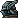

- 00:00:25hihikoko:
- 00:00:31石虎虎虎 (shihu6799):
- 00:00:32PleaseTrustMe:
- 00:00:54hihikoko:
- 00:01:08石虎虎虎 (shihu6799):
- 00:01:11PleaseTrustMe:
- 00:01:13hihikoko:
- 00:01:15PleaseTrustMe:
- 00:01:18石虎虎虎 (shihu6799):
- 00:01:34wajoho23:
- 00:01:41石虎虎虎 (shihu6799):
- 00:02:00momoco0619:
- 00:02:23momoco0619:
- 00:02:56momoco0619:
- 00:03:06石虎虎虎 (shihu6799):
- 00:03:25石虎虎虎 (shihu6799):
- 00:03:25momoco0619:
- 00:03:40我啊逸仔 (ee55665566):
- 00:04:39我啊逸仔 (ee55665566):
- 00:04:48我啊逸仔 (ee55665566):
- 00:05:09我啊逸仔 (ee55665566):
- 00:05:09欸剖 (apple10071):
- 00:05:19可愛的屁寶 (760jamesoo):
- 00:07:04思曼 (smallshlolz):
- 00:07:19momoco0619:
- 00:07:46我啊逸仔 (ee55665566):
- 00:07:52我啊逸仔 (ee55665566):
- 00:09:05可愛的屁寶 (760jamesoo):
- 00:09:39sammy98372597:
- 00:10:11hihikoko:
- 00:10:21sammy98372597:
- 00:11:06sammy98372597:
- 00:11:22sammy98372597:
- 00:11:37sammy98372597:
- 00:11:48sammy98372597:
- 00:12:04睏寶呦 (bobo8015):
- 00:13:20sammy98372597:
- 00:13:25c224488:
- 00:13:51sammy98372597:
- 00:14:06c224488:
- 00:14:13c224488:
- 00:14:16momoco0619:
- 00:14:30我啊逸仔 (ee55665566):
- 00:14:41c224488:
- 00:14:54sammy98372597:
- 00:14:57早晨容易伯 (widhe4823):
- 00:15:11我啊逸仔 (ee55665566):
- 00:15:12ok339:
- 00:15:15StreamElements:
- 00:15:16sammy98372597:
- 00:15:28happygogo01:
- 00:15:31旋轉的米米 (mememesoso):
- 00:15:32ok339:
- 00:15:32c224488:
- 00:15:32yang2456:
- 00:15:40ok339:
- 00:15:43早晨容易伯 (widhe4823):
- 00:15:51sammy98372597:
- 00:16:01思曼 (smallshlolz):
- 00:16:01happygogo01:
- 00:16:17欸剖 (apple10071):
- 00:16:23欸剖 (apple10071):
- 00:16:33happygogo01:
- 00:16:34思曼 (smallshlolz):
- 00:16:49c224488:
- 00:16:50早晨容易伯 (widhe4823):
- 00:17:11sammy98372597:
- 00:17:17c224488:
- 00:17:17sammy98372597:
- 00:17:48早晨容易伯 (widhe4823):
- 00:17:51早晨容易伯 (widhe4823):
- 00:17:52欸剖 (apple10071):
- 00:17:59c224488:
- 00:18:22凱瑟妮爆舞ひな寶 (karta2164480):
- 00:18:29睏寶呦 (bobo8015):
- 00:18:30sammy98372597:
- 00:18:32睏寶呦 (bobo8015):
- 00:18:41hihikoko:
- 00:18:41sammy98372597:
- 00:18:54sammy98372597:
- 00:19:03欸剖 (apple10071):
- 00:19:21hihikoko:
- 00:19:28sammy98372597:
- 00:19:30早晨容易伯 (widhe4823):
- 00:19:45c224488:
- 00:19:51hihikoko:
- 00:20:19sammy98372597:
- 00:20:27可愛的屁寶 (760jamesoo):
- 00:20:50欸剖 (apple10071):
- 00:20:55久保ちゃん大好き (mikeccy0522):
- 00:21:01早晨容易伯 (widhe4823):
- 00:21:03hihikoko:
- 00:21:08sammy98372597:
- 00:21:08c224488:
- 00:21:10PleaseTrustMe:
- 00:21:15早晨容易伯 (widhe4823):
- 00:21:17sammy98372597:
- 00:21:25sammy98372597:
- 00:21:32momoco0619:
- 00:21:52hihikoko:
- 00:21:58hihikoko:
- 00:22:00sammy98372597:
- 00:22:05sammy98372597:
- 00:22:06hihikoko:
- 00:22:10hihikoko:
- 00:22:13PleaseTrustMe:
- 00:22:18momoco0619:
- 00:22:32PleaseTrustMe:
- 00:22:35凱瑟妮爆舞ひな寶 (karta2164480):
- 00:22:37hihikoko:
- 00:22:39hihikoko:
- 00:22:41momoco0619:
- 00:22:41早晨容易伯 (widhe4823):
- 00:22:47sammy98372597:
- 00:22:54sammy98372597:
- 00:23:11PleaseTrustMe:
- 00:23:18sammy98372597:
- 00:23:24sammy98372597:
- 00:23:27早晨容易伯 (widhe4823):
- 00:23:48c224488:
- 00:23:55PleaseTrustMe:
- 00:23:58PleaseTrustMe:
- 00:24:00PleaseTrustMe:
- 00:24:13早晨容易伯 (widhe4823):
- 00:24:15sammy98372597:
- 00:24:22sammy98372597:
- 00:24:29PleaseTrustMe:
- 00:24:37欸剖 (apple10071):
- 00:24:39PleaseTrustMe:
- 00:24:41c224488:
- 00:24:42sammy98372597:
- 00:24:46早晨容易伯 (widhe4823):
- 00:24:49Walls90711:
- 00:24:55sammy98372597:
- 00:24:56hihikoko:
- 00:24:59欸剖 (apple10071):
- 00:25:05早晨容易伯 (widhe4823):
- 00:25:10sammy98372597:
- 00:25:37hihikoko:
- 00:25:39c224488:
- 00:25:42PleaseTrustMe:
- 00:25:43hihikoko:
- 00:25:44hihikoko:
- 00:25:46sammy98372597:
- 00:25:46凱瑟妮爆舞ひな寶 (karta2164480):
- 00:25:49sammy98372597:
- 00:25:50hihikoko:
- 00:25:53hihikoko:
- 00:25:56c224488:
- 00:25:58hihikoko:
- 00:25:59早晨容易伯 (widhe4823):
- 00:26:07hihikoko:
- 00:26:11hihikoko:
- 00:26:19PleaseTrustMe:
- 00:26:24sammy98372597:
- 00:26:36hihikoko:
- 00:26:40PleaseTrustMe:
- 00:26:46hihikoko:
- 00:26:49我啊逸仔 (ee55665566):
- 00:26:49StreamElements:
- 00:26:59我是玉米玉米玉米玉米玉米 (swat0118):
- 00:27:00user74123bot:
- 00:27:03hihikoko:
- 00:27:03凱瑟妮爆舞ひな寶 (karta2164480):
- 00:27:08PleaseTrustMe:
- 00:27:10sammy98372597:
- 00:27:11hihikoko:
- 00:27:12c224488:
- 00:27:15PleaseTrustMe:
- 00:27:16hihikoko:
- 00:27:18hihikoko:
- 00:27:23sammy98372597:
- 00:27:40hihikoko:
- 00:27:41sammy98372597:
- 00:27:42hihikoko:
- 00:28:11c224488:
- 00:28:22hihikoko:
- 00:28:37不好意思_ (4070_super):
- 00:28:39hihikoko:
- 00:28:41hihikoko:
- 00:28:57jj885597:
- 00:29:03hihikoko:
- 00:29:06sammy98372597:
- 00:29:11hihikoko:
- 00:29:15StreamElements:
- 00:29:21hihikoko:
- 00:29:23jj885597:
- 00:29:25sammy98372597:
- 00:29:26sammy98372597:
- 00:29:31hihikoko:
- 00:29:45hihikoko:
- 00:29:51sammy98372597:
- 00:30:00hihikoko:
- 00:30:09hihikoko:
- 00:30:24sammy98372597:
- 00:30:38hihikoko:
- 00:30:50hihikoko:
- 00:30:58hihikoko:
- 00:31:02c224488:
- 00:31:02sammy98372597:
- 00:31:03西雅圖彼岸人 (takooutatime):
- 00:31:07西雅圖彼岸人 (takooutatime):
- 00:31:13思曼 (smallshlolz):
- 00:31:17hihikoko:
- 00:31:19hihikoko:
- 00:31:19c224488:
- 00:31:44凱瑟妮爆舞ひな寶 (karta2164480):
- 00:31:49hihikoko:
- 00:31:49jj885597:
- 00:31:53sammy98372597:
- 00:32:14sammy98372597:
- 00:32:25hihikoko:
- 00:32:28momoco0619:
- 00:32:45StreamElements:
- 00:32:45hihikoko:
- 00:32:52sammy98372597:
- 00:32:55hihikoko:
- 00:32:56c224488:
- 00:32:59hihikoko:
- 00:33:24阿詳555 (s258258s):
- 00:33:42hihikoko:
- 00:33:45sammy98372597:
- 00:33:48hihikoko:
- 00:33:54hjy690803:
- 00:33:58雲落下聲音 (yoona0524):
- 00:33:58凱瑟妮爆舞ひな寶 (karta2164480):
- 00:34:04阿詳555 (s258258s):
- 00:34:26sammy98372597:
- 00:34:29sammy98372597:
- 00:34:54hihikoko:
- 00:34:58雲落下聲音 (yoona0524):
- 00:35:08hihikoko:
- 00:35:13凱瑟妮爆舞ひな寶 (karta2164480):
- 00:35:15StreamElements:
- 00:35:20hihikoko:
- 00:35:21hihikoko:
- 00:35:22凱瑟妮爆舞ひな寶 (karta2164480):
- 00:35:24hihikoko:
- 00:35:24sammy98372597:
- 00:35:24旋轉的米米 (mememesoso):
- 00:35:26hihikoko:
- 00:35:27寧靜的玥 (gtrock1943):
- 00:35:36sammy98372597:
- 00:35:37sammy98372597:
- 00:35:48qqyzz123:
- 00:35:53hihikoko:
- 00:35:54hihikoko:
- 00:35:57hihikoko:
- 00:35:58雲落下聲音 (yoona0524):
- 00:36:01hihikoko:
- 00:36:02凱瑟妮爆舞ひな寶 (karta2164480):
- 00:36:05sammy98372597:
- 00:36:07sammy98372597:
- 00:36:13hihikoko:
- 00:36:16ok339:
- 00:36:21hihikoko:
- 00:36:54sammy98372597:
- 00:37:22hihikoko:
- 00:37:25寧靜的玥 (gtrock1943):
- 00:37:28寧靜的玥 (gtrock1943):
- 00:37:30hihikoko:
- 00:37:35hihikoko:
- 00:37:37sammy98372597:
- 00:37:40jj885597:
- 00:37:41b3643791:
- 00:37:42hihikoko:
- 00:37:47hihikoko:
- 00:37:51巧克力奶茶好喝 (s1214161810):
- 00:37:55熊鴻 (scsa0525):
- 00:38:25hihikoko:
- 00:38:30寧靜的玥 (gtrock1943):
- 00:38:31hihikoko:
- 00:38:33hihikoko:
- 00:38:50hihikoko:
- 00:39:13小浣熊洛斯可 (fjm_aw):
- 00:39:13StreamElements:
- 00:39:48小浣熊洛斯可 (fjm_aw):
- 00:40:10hihikoko:
- 00:41:00StevenHK18:
- 00:41:43西雅圖彼岸人 (takooutatime):
- 00:41:48湯餃 (jacky90862):
- 00:41:53張東熙 (dirtythings):
- 00:42:10hihikoko:
- 00:42:21邪惡小阿哥 (alan81wang):
- 00:42:48hihikoko:
- 00:42:49早晨容易伯 (widhe4823):
- 00:42:51hihikoko:
- 00:42:53c224488:
- 00:42:54hihikoko:
- 00:42:55寧靜的玥 (gtrock1943):
- 00:43:00湯餃 (jacky90862):
- 00:43:05早晨容易伯 (widhe4823):
- 00:43:12寧靜的玥 (gtrock1943):
- 00:43:15早晨容易伯 (widhe4823):
- 00:43:21小臣 (chenkuen2016):
- 00:43:35sammy98372597:
- 00:43:43湯餃 (jacky90862):
- 00:43:47思曼 (smallshlolz):
- 00:43:48寧靜的玥 (gtrock1943):
- 00:44:02寧靜的玥 (gtrock1943):
- 00:44:07寧靜的玥 (gtrock1943):
- 00:44:12hihikoko:
- 00:44:59寧靜的玥 (gtrock1943):
- 00:45:00張東熙 (dirtythings):
- 00:45:03邪惡小阿哥 (alan81wang):
- 00:45:14張東熙 (dirtythings):
- 00:45:28我是泡我很泡 (bubbleowo):
- 00:45:35c224488:
- 00:45:47c224488:
- 00:45:55思曼 (smallshlolz):
- 00:45:55我是泡我很泡 (bubbleowo):
- 00:46:03寧靜的玥 (gtrock1943):
- 00:46:18我是泡我很泡 (bubbleowo):
- 00:46:31寧靜的玥 (gtrock1943):
- 00:46:32hihikoko:
- 00:46:34寧靜的玥 (gtrock1943):
- 00:46:35c224488:
- 00:46:36我是泡我很泡 (bubbleowo):
- 00:46:53我是泡我很泡 (bubbleowo):
- 00:47:04獨行夜 (osisjack2000):
- 00:47:24我是泡我很泡 (bubbleowo):
- 00:48:11hihikoko:
- 00:48:36寧靜的玥 (gtrock1943):
- 00:48:36c224488:
- 00:48:39我是泡我很泡 (bubbleowo):
- 00:48:41c224488:
- 00:48:42寧靜的玥 (gtrock1943):
- 00:48:48早晨容易伯 (widhe4823):
- 00:49:41思曼 (smallshlolz):
- 00:49:43寧靜的玥 (gtrock1943):
- 00:49:53思曼 (smallshlolz):
- 00:50:21sammy98372597:
- 00:50:26c224488:
- 00:50:27hihikoko:
- 00:50:28邪惡小阿哥 (alan81wang):
- 00:51:23張東熙 (dirtythings):
- 00:51:54早晨容易伯 (widhe4823):
- 00:52:00c224488:
- 00:52:03思曼 (smallshlolz):
- 00:54:13姬瑪娛樂る巧婷 (love2089885201314):
- 00:54:42張東熙 (dirtythings):
- 00:55:03姬瑪娛樂る巧婷 (love2089885201314):
- 00:55:15StreamElements:
- 00:55:22早晨容易伯 (widhe4823):
- 00:55:30早晨容易伯 (widhe4823):
- 00:55:30StreamElements:
- 00:56:45c224488:
- 00:56:54早晨容易伯 (widhe4823):
- 00:56:55早晨容易伯 (widhe4823):
- 00:57:29c224488:
- 00:59:00c224488:
- 00:59:08c224488:
- 00:59:51c224488:
- 00:59:56hihikoko:
- 01:00:05寧靜的玥 (gtrock1943):
- 01:01:44祥倪_ (abc81602):
- 01:01:47c224488:
- 01:01:48早晨容易伯 (widhe4823):
- 01:01:55寧靜的玥 (gtrock1943):
- 01:02:00tar00nijima:
- 01:02:45張東熙 (dirtythings):
- 01:02:57c224488:
- 01:04:50祥倪_ (abc81602):
- 01:05:08安平椰子哥 (poptyzx):
- 01:06:07安平椰子哥 (poptyzx):
- 01:06:19寧靜的玥 (gtrock1943):
- 01:06:20邪惡小阿哥 (alan81wang):
- 01:06:20早晨容易伯 (widhe4823):
- 01:06:38安平椰子哥 (poptyzx):
- 01:06:38姬瑪娛樂る巧婷 (love2089885201314):
- 01:06:56邪惡小阿哥 (alan81wang):
- 01:07:08安平椰子哥 (poptyzx):
- 01:07:37早晨容易伯 (widhe4823):
- 01:07:45StreamElements:
- 01:07:46安平椰子哥 (poptyzx):
- 01:07:57安平椰子哥 (poptyzx):
- 01:07:59早晨容易伯 (widhe4823):
- 01:07:59安平椰子哥 (poptyzx):
- 01:09:07安平椰子哥 (poptyzx):
- 01:09:37張東熙 (dirtythings):
- 01:09:52早晨容易伯 (widhe4823):
- 01:10:03邪惡小阿哥 (alan81wang):
- 01:10:05張東熙 (dirtythings):
- 01:10:22c224488:
- 01:10:41安平椰子哥 (poptyzx):
- 01:11:41c224488:
- 01:11:47c224488:
- 01:13:14KanaGang:
- 01:13:14StreamElements:
- 01:13:18reiken27:
- 01:13:35凱瑟妮爆舞ひな寶 (karta2164480):
- 01:13:40拉斯洛 (laszloyd):
- 01:13:40Nightbot:
- 01:13:40張東熙 (dirtythings):
- 01:13:42KanaGang:
- 01:14:03KanaGang:
- 01:14:11KanaGang:
- 01:14:12reiken27:
- 01:14:17小楊啦 (eddy_yang):
- 01:14:18凱瑟妮爆舞ひな寶 (karta2164480):
- 01:14:26轟丸啦 (cd0815):
- 01:14:27reiken27:
- 01:14:28reiken27:
- 01:14:28轟丸啦 (cd0815):
- 01:14:28KanaGang:
- 01:14:29小楊啦 (eddy_yang):
- 01:14:30邪惡小阿哥 (alan81wang):
- 01:14:32hihikoko:
- 01:14:42c224488:
- 01:15:05邪惡小阿哥 (alan81wang):
- 01:15:10邪惡小阿哥 (alan81wang):
- 01:15:15StreamElements:
- 01:15:23凱瑟妮爆舞ひな寶 (karta2164480):
- 01:15:31邪惡小阿哥 (alan81wang):
- 01:15:48c224488:
- 01:16:36轟丸啦 (cd0815):
- 01:16:49轟丸啦 (cd0815):
- 01:16:50c224488:
- 01:17:44轟丸啦 (cd0815):
- 01:17:55hihikoko:
- 01:18:04邪惡小阿哥 (alan81wang):
- 01:18:07轟丸啦 (cd0815):
- 01:18:17轟丸啦 (cd0815):
- 01:18:27邪惡小阿哥 (alan81wang):
- 01:18:30轟丸啦 (cd0815):
- 01:18:33轟丸啦 (cd0815):
- 01:18:53邪惡小阿哥 (alan81wang):
- 01:19:10c224488:
- 01:19:31邪惡小阿哥 (alan81wang):
- 01:19:56邪惡小阿哥 (alan81wang):
- 01:20:17邪惡小阿哥 (alan81wang):
- 01:20:48c224488:
- 01:20:50邪惡小阿哥 (alan81wang):
- 01:20:57轟丸啦 (cd0815):
- 01:21:10邪惡小阿哥 (alan81wang):
- 01:21:22轟丸啦 (cd0815):
- 01:21:49邪惡小阿哥 (alan81wang):
- 01:22:51c224488:
- 01:22:58邪惡小阿哥 (alan81wang):
- 01:23:04c224488:
- 01:23:30邪惡小阿哥 (alan81wang):
- 01:23:36張東熙 (dirtythings):
- 01:23:40張東熙 (dirtythings):
- 01:23:49邪惡小阿哥 (alan81wang):
- 01:24:07邪惡小阿哥 (alan81wang):
- 01:24:47張東熙 (dirtythings):
- 01:24:50c224488:
- 01:26:18邪惡小阿哥 (alan81wang):
- 01:26:22c224488:
- 01:26:48c224488:
- 01:26:50c224488:
- 01:26:53張東熙 (dirtythings):
- 01:26:58張東熙 (dirtythings):
- 01:27:26c224488:
- 01:27:51邪惡小阿哥 (alan81wang):
- 01:28:17轟丸啦 (cd0815):
- 01:29:04邪惡小阿哥 (alan81wang):
- 01:29:44轟丸啦 (cd0815):
- 01:29:47轟丸啦 (cd0815):
- 01:29:53張東熙 (dirtythings):
- 01:30:06早晨容易伯 (widhe4823):
- 01:32:16早晨容易伯 (widhe4823):
- 01:32:31邪惡小阿哥 (alan81wang):
- 01:32:34安平椰子哥 (poptyzx):
- 01:32:51安平椰子哥 (poptyzx):
- 01:32:58轟丸啦 (cd0815):
- 01:33:09hihikoko:
- 01:33:11轟丸啦 (cd0815):
- 01:33:11張東熙 (dirtythings):
- 01:33:20邪惡小阿哥 (alan81wang):
- 01:33:23早晨容易伯 (widhe4823):
- 01:33:36邪惡小阿哥 (alan81wang):
- 01:33:54張東熙 (dirtythings):
- 01:34:09邪惡小阿哥 (alan81wang):
- 01:34:18hihikoko:
- 01:34:23祥倪_ (abc81602):
- 01:34:35hihikoko:
- 01:34:40hjy690803:
- 01:34:41轟丸啦 (cd0815):
- 01:34:49邪惡小阿哥 (alan81wang):
- 01:34:49七星破軍迅切開 (su123123):
- 01:35:03轟丸啦 (cd0815):
- 01:35:08轟丸啦 (cd0815):
- 01:35:15StreamElements:
- 01:35:15遠遠 (ericwu0726):
- 01:35:29hihikoko:
- 01:35:32hihikoko:
- 01:35:32邪惡小阿哥 (alan81wang):
- 01:35:33轟丸啦 (cd0815):
- 01:35:34早晨容易伯 (widhe4823):
- 01:35:40早晨容易伯 (widhe4823):
- 01:35:46hihikoko:
- 01:35:49hihikoko:
- 01:35:57張東熙 (dirtythings):
- 01:36:05早晨容易伯 (widhe4823):
- 01:36:06雷夢家的長頸鹿 (iiiemongiraffe):
- 01:36:25雷夢家的長頸鹿 (iiiemongiraffe):
- 01:38:06張東熙 (dirtythings):
- 01:39:19野蠻人雙持法師 (kusty072):
- 01:39:23野蠻人雙持法師 (kusty072):
- 01:40:08早晨容易伯 (widhe4823):
- 01:40:17hihikoko:
- 01:40:36雷夢家的長頸鹿 (iiiemongiraffe):
- 01:41:02hihikoko:
- 01:41:05邪惡小阿哥 (alan81wang):
- 01:41:06hihikoko:
- 01:41:12hihikoko:
- 01:41:13雷夢家的長頸鹿 (iiiemongiraffe):
- 01:41:51野蠻人雙持法師 (kusty072):
- 01:41:54安平椰子哥 (poptyzx):
- 01:42:45StreamElements:
- 01:43:34wilson_intj:
- 01:44:08kara2266:
- 01:44:11wilson_intj:
- 01:44:20wilson_intj:
- 01:44:21祥倪_ (abc81602):
- 01:44:30JASONnPIZZA:
- 01:44:31JASONnPIZZA:
- 01:44:47JASONnPIZZA:
- 01:44:48安平椰子哥 (poptyzx):
- 01:44:50基隆阿翰 (fish6145):
- 01:44:53JASONnPIZZA:
- 01:44:54JASONnPIZZA:
- 01:45:03基隆阿翰 (fish6145):
- 01:45:12JASONnPIZZA:
- 01:45:19JASONnPIZZA:
- 01:45:33wilson_intj:
- 01:45:40JASONnPIZZA:
- 01:45:51安平椰子哥 (poptyzx):
- 01:45:55JASONnPIZZA:
- 01:46:10JASONnPIZZA:
- 01:46:23早晨容易伯 (widhe4823):
- 01:46:37JASONnPIZZA:
- 01:46:42JASONnPIZZA:
- 01:46:48JASONnPIZZA:
- 01:46:55早晨容易伯 (widhe4823):
- 01:47:05JASONnPIZZA:
- 01:47:13轟丸啦 (cd0815):
- 01:47:13安平椰子哥 (poptyzx):
- 01:47:25祥倪_ (abc81602):
- 01:47:30wilson_intj:
- 01:47:39hihikoko:
- 01:47:44JASONnPIZZA:
- 01:47:46hihikoko:
- 01:48:00JASONnPIZZA:
- 01:48:11wilson_intj:
- 01:48:12JASONnPIZZA:
- 01:48:15JASONnPIZZA:
- 01:48:19happygogo01:
- 01:48:31JASONnPIZZA:
- 01:48:33張東熙 (dirtythings):
- 01:48:36wilson_intj:
- 01:48:37張東熙 (dirtythings):
- 01:48:40轟丸啦 (cd0815):
- 01:48:51張東熙 (dirtythings):
- 01:48:53happygogo01:
- 01:48:57JASONnPIZZA:
- 01:49:04張東熙 (dirtythings):
- 01:49:13JASONnPIZZA:
- 01:49:25happygogo01:
- 01:49:27JASONnPIZZA:
- 01:49:32tar00nijima:
- 01:49:34池小草 (oops_gelsey):
- 01:49:35StreamElements:
- 01:49:40ReinhardtAstrea:
- 01:49:43JASONnPIZZA:
- 01:49:44棄兒估價 (72goodjob):
- 01:49:45wilson_intj:
- 01:49:45張東熙 (dirtythings):
- 01:49:47hillp:
- 01:49:50拉斯洛 (laszloyd):
- 01:49:50Nightbot:
- 01:49:52池小草 (oops_gelsey):
- 01:49:56奇奇828 (chi828):
- 01:50:02林口阿清 (ching1798):
- 01:50:06sukano_kano:
- 01:50:09rRrRrG:
- 01:50:10池小草 (oops_gelsey):
- 01:50:11tar00nijima:
- 01:50:14JASONnPIZZA:
- 01:50:16池小草 (oops_gelsey):
- 01:50:17張東熙 (dirtythings):
- 01:50:17早晨容易伯 (widhe4823):
- 01:50:17sukano_kano:
- 01:50:18hillp:
- 01:50:18邪惡小阿哥 (alan81wang):
- 01:50:43wilson_intj:
- 01:50:48happygogo01:
- 01:50:52JASONnPIZZA:
- 01:50:54張東熙 (dirtythings):
- 01:51:02池小草 (oops_gelsey):
- 01:51:10wilson_intj:
- 01:51:15JASONnPIZZA:
- 01:51:24轟丸啦 (cd0815):
- 01:51:28happygogo01:
- 01:51:30池小草 (oops_gelsey):
- 01:51:32張東熙 (dirtythings):
- 01:51:34rRrRrG:
- 01:51:36JASONnPIZZA:
- 01:51:39JASONnPIZZA:
- 01:51:41JASONnPIZZA:
- 01:51:43JASONnPIZZA:
- 01:52:08奇奇828 (chi828):
- 01:52:17JASONnPIZZA:
- 01:52:20wilson_intj:
- 01:52:21JASONnPIZZA:
- 01:52:36JASONnPIZZA:
- 01:52:53JASONnPIZZA:
- 01:52:54JASONnPIZZA:
- 01:53:03wilson_intj:
- 01:53:09池小草 (oops_gelsey):
- 01:53:29JASONnPIZZA:
- 01:53:44happygogo01:
- 01:53:51wilson_intj:
- 01:54:05wilson_intj:
- 01:54:08JASONnPIZZA:
- 01:54:09JASONnPIZZA:
- 01:54:11祥倪_ (abc81602):
- 01:54:12JASONnPIZZA:
- 01:54:59凱瑟妮爆舞ひな寶 (karta2164480):
- 01:55:02happygogo01:
- 01:55:14JASONnPIZZA:
- 01:55:15StreamElements:
- 01:55:28wilson_intj:
- 01:55:35happygogo01:
- 01:55:35JASONnPIZZA:
- 01:55:39sai3598843:
- 01:55:42JASONnPIZZA:
- 01:55:49happygogo01:
- 01:55:50JASONnPIZZA:
- 01:55:56JASONnPIZZA:
- 01:55:58林人 (lin_ppl):
- 01:56:02rontw:
- 01:56:04wilson_intj:
- 01:56:27wilson_intj:
- 01:56:32JASONnPIZZA:
- 01:56:32happygogo01:
- 01:56:36JASONnPIZZA:
- 01:56:43JASONnPIZZA:
- 01:56:54happygogo01:
- 01:56:58早晨容易伯 (widhe4823):
- 01:57:01JASONnPIZZA:
- 01:57:07JASONnPIZZA:
- 01:57:12happygogo01:
- 01:57:34早晨容易伯 (widhe4823):
- 01:58:08wilson_intj:
- 01:58:26wilson_intj:
- 01:58:41happygogo01:
- 01:59:03JASONnPIZZA:
- 01:59:06JASONnPIZZA:
- 01:59:08張東熙 (dirtythings):
- 01:59:23欸剖 (apple10071):
- 01:59:30JASONnPIZZA:
- 01:59:38欸剖 (apple10071):
- 01:59:45asiafantonegg3be0:
- 01:59:47JASONnPIZZA:
- 01:59:58JASONnPIZZA:
- 02:00:02欸剖 (apple10071):
- 02:00:09早晨容易伯 (widhe4823):
- 02:00:55JASONnPIZZA:
- 02:00:56張東熙 (dirtythings):
- 02:01:11池小草 (oops_gelsey):
- 02:01:24祥倪_ (abc81602):
- 02:01:52池小草 (oops_gelsey):
- 02:02:02池小草 (oops_gelsey):
- 02:02:39c224488:
- 02:02:40張東熙 (dirtythings):
- 02:02:45張東熙 (dirtythings):
- 02:02:45JASONnPIZZA:
- 02:02:46hjy690803:
- 02:02:50JASONnPIZZA:
- 02:02:52JASONnPIZZA:
- 02:02:55JASONnPIZZA:
- 02:03:18張東熙 (dirtythings):
- 02:03:34可羅米寶寶 (blueskyriver1217):
- 02:03:42c224488:
- 02:03:42StreamElements:
- 02:04:27JASONnPIZZA:
- 02:04:28歇一歇 (dryiugevk):
- 02:04:44JASONnPIZZA:
- 02:04:47JASONnPIZZA:
- 02:04:49JASONnPIZZA:
- 02:05:03JASONnPIZZA:
- 02:05:15歇一歇 (dryiugevk):
- 02:05:21JASONnPIZZA:
- 02:05:24JASONnPIZZA:
- 02:05:33歇一歇 (dryiugevk):
- 02:05:39歇一歇 (dryiugevk):
- 02:05:43張東熙 (dirtythings):
- 02:05:55張東熙 (dirtythings):
- 02:06:35JASONnPIZZA:
- 02:06:38歇一歇 (dryiugevk):
- 02:06:46JASONnPIZZA:
- 02:06:56歇一歇 (dryiugevk):
- 02:06:56JASONnPIZZA:
- 02:06:59JASONnPIZZA:
- 02:07:12張東熙 (dirtythings):
- 02:07:14JASONnPIZZA:
- 02:07:24歇一歇 (dryiugevk):
- 02:07:25JASONnPIZZA:
- 02:07:26邪惡小阿哥 (alan81wang):
- 02:07:28張東熙 (dirtythings):
- 02:07:29獨行夜 (osisjack2000):
- 02:07:32JASONnPIZZA:
- 02:07:35歇一歇 (dryiugevk):
- 02:07:36c224488:
- 02:07:43我為妳著迷 (navierking):
- 02:07:48JASONnPIZZA:
- 02:07:55c224488:
- 02:07:59歇一歇 (dryiugevk):
- 02:08:12張東熙 (dirtythings):
- 02:08:13hihikoko:
- 02:08:17hihikoko:
- 02:08:19忘了飛的彼得潘 (stan125black):
- 02:08:21JASONnPIZZA:
- 02:08:25JASONnPIZZA:
- 02:08:28JASONnPIZZA:
- 02:09:20wilson_intj:
- 02:09:35JASONnPIZZA:
- 02:09:58JASONnPIZZA:
- 02:10:19wilson_intj:
- 02:10:35c224488:
- 02:10:43JASONnPIZZA:
- 02:10:50JASONnPIZZA:
- 02:11:08祥倪_ (abc81602):
- 02:11:53張東熙 (dirtythings):
- 02:12:18JASONnPIZZA:
- 02:12:29JASONnPIZZA:
- 02:12:32JASONnPIZZA:
- 02:12:55JASONnPIZZA:
- 02:13:11wilson_intj:
- 02:13:31JASONnPIZZA:
- 02:13:35JASONnPIZZA:
- 02:13:37JASONnPIZZA:
- 02:13:54JASONnPIZZA:
- 02:14:01ok339:
- 02:14:02wilson_intj:
- 02:14:07ok339:
- 02:14:07JASONnPIZZA:
- 02:14:37JASONnPIZZA:
- 02:14:46JASONnPIZZA:
- 02:14:46一起學貓叫 (5050fiftyfifty):
- 02:15:01JASONnPIZZA:
- 02:15:14JASONnPIZZA:
- 02:15:15StreamElements:
- 02:15:23JASONnPIZZA:
- 02:15:51JASONnPIZZA:
- 02:15:53JASONnPIZZA:
- 02:15:56JASONnPIZZA:
- 02:16:16維爾森_777 (willson__77):
- 02:16:21忘了飛的彼得潘 (stan125black):
- 02:16:22JASONnPIZZA:
- 02:16:24JASONnPIZZA:
- 02:16:25三十三等純愛大法師卡門哥 (abc86752):
- 02:16:37wilson_intj:
- 02:17:03JASONnPIZZA:
- 02:17:04三十三等純愛大法師卡門哥 (abc86752):
- 02:17:04忘了飛的彼得潘 (stan125black):
- 02:17:05JASONnPIZZA:
- 02:17:11JASONnPIZZA:
- 02:17:16JASONnPIZZA:
- 02:17:25JASONnPIZZA:
- 02:17:37JASONnPIZZA:
- 02:17:39忘了飛的彼得潘 (stan125black):
- 02:17:45JASONnPIZZA:
- 02:17:45StreamElements:
- 02:17:51JASONnPIZZA:
- 02:18:06JASONnPIZZA:
- 02:18:08歇一歇 (dryiugevk):
- 02:18:22JASONnPIZZA:
- 02:18:43JASONnPIZZA:
- 02:19:07JASONnPIZZA:
- 02:19:30歇一歇 (dryiugevk):
- 02:19:31wilson_intj:
- 02:19:39祥倪_ (abc81602):
- 02:19:40獨行夜 (osisjack2000):
- 02:19:41邪惡小阿哥 (alan81wang):
- 02:19:44JASONnPIZZA:
- 02:19:50JASONnPIZZA:
- 02:19:53歇一歇 (dryiugevk):
- 02:19:59JASONnPIZZA:
- 02:20:05JASONnPIZZA:
- 02:20:07wilson_intj:
- 02:20:09JASONnPIZZA:
- 02:20:15獨行夜 (osisjack2000):
- 02:20:16JASONnPIZZA:
- 02:20:18wilson_intj:
- 02:20:22歇一歇 (dryiugevk):
- 02:20:22祥倪_ (abc81602):
- 02:20:24JASONnPIZZA:
- 02:20:37JASONnPIZZA:
- 02:20:48c224488:
- 02:20:58JASONnPIZZA:
- 02:20:59三十三等純愛大法師卡門哥 (abc86752):
- 02:21:01wilson_intj:
- 02:21:16祥倪_ (abc81602):
- 02:21:17c224488:
- 02:21:24wilson_intj:
- 02:21:42wilson_intj:
- 02:21:49三十三等純愛大法師卡門哥 (abc86752):
- 02:21:52三十三等純愛大法師卡門哥 (abc86752):
- 02:21:57JASONnPIZZA:
- 02:22:06JASONnPIZZA:
- 02:22:07JASONnPIZZA:
- 02:22:12JASONnPIZZA:
- 02:22:15JASONnPIZZA:
- 02:22:22思曼 (smallshlolz):
- 02:22:24祥倪_ (abc81602):
- 02:22:24三十三等純愛大法師卡門哥 (abc86752):
- 02:22:39c224488:
- 02:22:43三十三等純愛大法師卡門哥 (abc86752):
- 02:22:51JASONnPIZZA:
- 02:22:53JASONnPIZZA:
- 02:22:54忘了飛的彼得潘 (stan125black):
- 02:22:58JASONnPIZZA:
- 02:22:59我啊逸仔 (ee55665566):
- 02:23:08JASONnPIZZA:
- 02:23:09wilson_intj:
- 02:23:15wilson_intj:
- 02:23:18JASONnPIZZA:
- 02:23:22wilson_intj:
- 02:23:23三十三等純愛大法師卡門哥 (abc86752):
- 02:23:25三十三等純愛大法師卡門哥 (abc86752):
- 02:23:44JASONnPIZZA:
- 02:23:48wilson_intj:
- 02:23:51JASONnPIZZA:
- 02:23:52三十三等純愛大法師卡門哥 (abc86752):
- 02:23:54JASONnPIZZA:
- 02:24:10忘了飛的彼得潘 (stan125black):
- 02:24:14可愛的屁寶 (760jamesoo):
- 02:24:33三十三等純愛大法師卡門哥 (abc86752):
- 02:24:36三十三等純愛大法師卡門哥 (abc86752):
- 02:24:50wilson_intj:
- 02:24:58凱斯林 (keith_lin_):
- 02:25:11凱斯林 (keith_lin_):
- 02:25:17凱斯林 (keith_lin_):
- 02:25:21祥倪_ (abc81602):
- 02:25:22忘了飛的彼得潘 (stan125black):
- 02:25:25dog19920501:
- 02:25:28三十三等純愛大法師卡門哥 (abc86752):
- 02:26:02JASONnPIZZA:
- 02:26:06三十三等純愛大法師卡門哥 (abc86752):
- 02:26:25祥倪_ (abc81602):
- 02:26:31JASONnPIZZA:
- 02:26:33JASONnPIZZA:
- 02:26:35JASONnPIZZA:
- 02:26:46JASONnPIZZA:
- 02:26:53JASONnPIZZA:
- 02:26:56三十三等純愛大法師卡門哥 (abc86752):
- 02:26:56獨行夜 (osisjack2000):
- 02:26:57gboyrichx:
- 02:27:00三十三等純愛大法師卡門哥 (abc86752):
- 02:27:08JASONnPIZZA:
- 02:27:20忘了飛的彼得潘 (stan125black):
- 02:27:21tar00nijima:
- 02:27:22JASONnPIZZA:
- 02:27:36JASONnPIZZA:
- 02:27:39JASONnPIZZA:
- 02:28:04JASONnPIZZA:
- 02:28:39祥倪_ (abc81602):
- 02:28:53邪惡小阿哥 (alan81wang):
- 02:28:57凱瑟妮爆舞ひな寶 (karta2164480):
- 02:29:05JASONnPIZZA:
- 02:29:07JASONnPIZZA:
- 02:29:09JASONnPIZZA:
- 02:29:09忘了飛的彼得潘 (stan125black):
- 02:29:11tar00nijima:
- 02:29:18歇一歇 (dryiugevk):
- 02:29:22JASONnPIZZA:
- 02:29:23Nike0118:
- 02:29:27gboyrichx:
- 02:29:32JASONnPIZZA:
- 02:29:32綠茶貓 (lulu701):
- 02:29:33蘿蔔乾 (robert1431):
- 02:29:44gboyrichx:
- 02:29:46忘了飛的彼得潘 (stan125black):
- 02:29:46JASONnPIZZA:
- 02:29:48谷山志村猜想 (mercythumb):
- 02:29:52rRrRrG:
- 02:29:54綠茶貓 (lulu701):
- 02:29:54JASONnPIZZA:
- 02:29:58獨行夜 (osisjack2000):
- 02:30:29流體力學 (lululemontw):
- 02:30:34JASONnPIZZA:
- 02:30:50JASONnPIZZA:
- 02:30:52kara2266:
- 02:30:53祥倪_ (abc81602):
- 02:30:53忘了飛的彼得潘 (stan125black):
- 02:31:01樂可可_ (joey56973):
- 02:31:15JASONnPIZZA:
- 02:31:17JASONnPIZZA:
- 02:31:25JASONnPIZZA:
- 02:31:39JASONnPIZZA:
- 02:31:41祥倪_ (abc81602):
- 02:31:45kara2266:
- 02:31:58我啊逸仔 (ee55665566):
- 02:32:01ok339:
- 02:32:04祥倪_ (abc81602):
- 02:32:19JASONnPIZZA:
- 02:32:26JASONnPIZZA:
- 02:32:28JASONnPIZZA:
- 02:32:29綠茶貓 (lulu701):
- 02:32:32綠茶貓 (lulu701):
- 02:32:34asiafantonegg3be0:
- 02:32:41歇一歇 (dryiugevk):
- 02:32:41JASONnPIZZA:
- 02:32:44思曼 (smallshlolz):
- 02:32:48asiafantonegg3be0:
- 02:32:50祥倪_ (abc81602):
- 02:32:54JASONnPIZZA:
- 02:32:54張東熙 (dirtythings):
- 02:33:04不好意思_ (4070_super):
- 02:33:05JASONnPIZZA:
- 02:33:29祥倪_ (abc81602):
- 02:33:41c224488:
- 02:33:45wilson_intj:
- 02:33:57JASONnPIZZA:
- 02:34:00忘了飛的彼得潘 (stan125black):
- 02:34:08JASONnPIZZA:
- 02:34:09wilson_intj:
- 02:35:15StreamElements:
- 02:35:15wilson_intj:
- 02:35:19忘了飛的彼得潘 (stan125black):
- 02:35:21wilson_intj:
- 02:35:40wilson_intj:
- 02:35:46歇一歇 (dryiugevk):
- 02:35:47JASONnPIZZA:
- 02:35:51不好意思_ (4070_super):
- 02:35:56忘了飛的彼得潘 (stan125black):
- 02:36:01JASONnPIZZA:
- 02:36:20JASONnPIZZA:
- 02:36:25JASONnPIZZA:
- 02:36:26JASONnPIZZA:
- 02:36:54祥倪_ (abc81602):
- 02:37:02home2003194:
- 02:37:06不好意思_ (4070_super):
- 02:37:07JASONnPIZZA:
- 02:37:10home2003194:
- 02:37:11JASONnPIZZA:
- 02:37:12asiafantonegg3be0:
- 02:37:16凍巧巧 (jelly_qiao_):
- 02:37:21凍巧巧 (jelly_qiao_):
- 02:37:25凍巧巧 (jelly_qiao_):
- 02:37:26JASONnPIZZA:
- 02:37:29凍巧巧 (jelly_qiao_):
- 02:37:29歇一歇 (dryiugevk):
- 02:37:31wilson_intj:
- 02:37:34asiafantonegg3be0:
- 02:37:44JASONnPIZZA:
- 02:37:53凍巧巧 (jelly_qiao_):
- 02:37:54JASONnPIZZA:
- 02:38:07忘了飛的彼得潘 (stan125black):
- 02:38:09凍巧巧 (jelly_qiao_):
- 02:38:18c224488:
- 02:38:25小浣熊洛斯可 (fjm_aw):
- 02:38:29hjy690803:
- 02:38:51JASONnPIZZA:
- 02:38:54JASONnPIZZA:
- 02:38:58JASONnPIZZA:
- 02:39:14JASONnPIZZA:
- 02:39:18JASONnPIZZA:
- 02:39:19hjy690803:
- 02:39:25JASONnPIZZA:
- 02:39:30不好意思_ (4070_super):
- 02:39:37JASONnPIZZA:
- 02:39:43祥倪_ (abc81602):
- 02:39:50忘了飛的彼得潘 (stan125black):
- 02:39:50小浣熊洛斯可 (fjm_aw):
- 02:40:00JASONnPIZZA:
- 02:40:00凍巧巧 (jelly_qiao_):
- 02:40:04JASONnPIZZA:
- 02:40:05忘了飛的彼得潘 (stan125black):
- 02:40:07凍巧巧 (jelly_qiao_):
- 02:40:22易碎勿碰 (hsun0518):
- 02:40:22JASONnPIZZA:
- 02:40:28忘了飛的彼得潘 (stan125black):
- 02:40:41JASONnPIZZA:
- 02:40:43祥倪_ (abc81602):
- 02:40:45小浣熊洛斯可 (fjm_aw):
- 02:40:48rRrRrG:
- 02:40:55早晨容易伯 (widhe4823):
- 02:40:55張東熙 (dirtythings):
- 02:41:04凍巧巧 (jelly_qiao_):
- 02:41:06邪惡小阿哥 (alan81wang):
- 02:41:19JASONnPIZZA:
- 02:41:27JASONnPIZZA:
- 02:41:31易碎勿碰 (hsun0518):
- 02:41:39不好意思_ (4070_super):
- 02:41:45忘了飛的彼得潘 (stan125black):
- 02:41:57邪惡小阿哥 (alan81wang):
- 02:42:04c224488:
- 02:42:05小浣熊洛斯可 (fjm_aw):
- 02:42:07PleaseTrustMe:
- 02:42:09邪惡小阿哥 (alan81wang):
- 02:42:10hjy690803:
- 02:42:21早晨容易伯 (widhe4823):
- 02:42:23忘了飛的彼得潘 (stan125black):
- 02:42:25張東熙 (dirtythings):
- 02:42:47邪惡小阿哥 (alan81wang):
- 02:43:00忘了飛的彼得潘 (stan125black):
- 02:44:30小浣熊洛斯可 (fjm_aw):
- 02:44:50米朵粒小姐姐 (0_0tjh):
- 02:45:19馬東石丁尼 (uncle_martini):
- 02:45:20米朵粒小姐姐 (0_0tjh):
- 02:45:24PleaseTrustMe:
- 02:45:29PleaseTrustMe:
- 02:45:31米朵粒小姐姐 (0_0tjh):
- 02:45:46米朵粒小姐姐 (0_0tjh):
- 02:45:50馬東石丁尼 (uncle_martini):
- 02:45:50StreamElements:
- 02:45:56邪惡小阿哥 (alan81wang):
- 02:46:00米朵粒小姐姐 (0_0tjh):
- 02:46:01馬東石丁尼 (uncle_martini):
- 02:46:07忘了飛的彼得潘 (stan125black):
- 02:46:22米朵粒小姐姐 (0_0tjh):
- 02:46:28馬東石丁尼 (uncle_martini):
- 02:46:44我啊逸仔 (ee55665566):
- 02:46:54JASONnPIZZA:
- 02:46:57米朵粒小姐姐 (0_0tjh):
- 02:47:00馬東石丁尼 (uncle_martini):
- 02:47:02早晨容易伯 (widhe4823):
- 02:47:02小浣熊洛斯可 (fjm_aw):
- 02:47:19米朵粒小姐姐 (0_0tjh):
- 02:47:36米朵粒小姐姐 (0_0tjh):
- 02:47:37馬東石丁尼 (uncle_martini):
- 02:48:13JASONnPIZZA:
- 02:48:33可愛的屁寶 (760jamesoo):
- 02:48:44user74123bot:
- 02:48:52rRrRrG:
- 02:48:54JASONnPIZZA:
- 02:49:14JASONnPIZZA:
- 02:49:15米朵粒小姐姐 (0_0tjh):
- 02:49:15jeffhaha1206:
- 02:49:29邪惡小阿哥 (alan81wang):
- 02:49:41JASONnPIZZA:
- 02:49:49米朵粒小姐姐 (0_0tjh):
- 02:50:02米朵粒小姐姐 (0_0tjh):
- 02:50:06米朵粒小姐姐 (0_0tjh):
- 02:50:33奶油紅豆 (zxc1107):
- 02:50:33JASONnPIZZA:
- 02:50:33忘了飛的彼得潘 (stan125black):
- 02:50:35米朵粒小姐姐 (0_0tjh):
- 02:50:59谷山志村猜想 (mercythumb):
- 02:51:00JASONnPIZZA:
- 02:51:04JASONnPIZZA:
- 02:51:08john345678a:
- 02:51:21米朵粒小姐姐 (0_0tjh):
- 02:51:26米朵粒小姐姐 (0_0tjh):
- 02:51:29JASONnPIZZA:
- 02:51:30JASONnPIZZA:
- 02:51:36JASONnPIZZA:
- 02:51:38JASONnPIZZA:
- 02:51:43谷山志村猜想 (mercythumb):
- 02:51:57JASONnPIZZA:
- 02:52:01JASONnPIZZA:
- 02:52:13JASONnPIZZA:
- 02:52:19米朵粒小姐姐 (0_0tjh):
- 02:52:23JASONnPIZZA:
- 02:52:37JASONnPIZZA:
- 02:52:43我是泡我很泡 (bubbleowo):
- 02:52:45StreamElements:
- 02:52:51JASONnPIZZA:
- 02:52:53我是泡我很泡 (bubbleowo):
- 02:53:00谷山志村猜想 (mercythumb):
- 02:53:03JASONnPIZZA:
- 02:53:09JASONnPIZZA:
- 02:53:11JASONnPIZZA:
- 02:53:12我是泡我很泡 (bubbleowo):
- 02:53:15JASONnPIZZA:
- 02:53:16歇一歇 (dryiugevk):
- 02:53:32我是泡我很泡 (bubbleowo):
- 02:53:34JASONnPIZZA:
- 02:53:37谷山志村猜想 (mercythumb):
- 02:53:40dog19920501:
- 02:53:40JASONnPIZZA:
- 02:53:55JASONnPIZZA:
- 02:53:59我是泡我很泡 (bubbleowo):
- 02:54:24JASONnPIZZA:
- 02:55:15StreamElements:
- 02:55:37早晨容易伯 (widhe4823):
- 02:55:55JASONnPIZZA:
- 02:56:22早晨容易伯 (widhe4823):
- 02:56:23JASONnPIZZA:
- 02:56:30邪惡小阿哥 (alan81wang):
- 02:56:44我是泡我很泡 (bubbleowo):
- 02:56:49JASONnPIZZA:
- 02:56:54我是泡我很泡 (bubbleowo):
- 02:56:54JASONnPIZZA:
- 02:56:59JASONnPIZZA:
- 02:57:02我是泡我很泡 (bubbleowo):
- 02:57:03谷山志村猜想 (mercythumb):
- 02:57:04JASONnPIZZA:
- 02:57:09歇一歇 (dryiugevk):
- 02:57:11早晨容易伯 (widhe4823):
- 02:57:23c224488:
- 02:57:37獨行夜 (osisjack2000):
- 02:57:40張東熙 (dirtythings):
- 02:57:42邪惡小阿哥 (alan81wang):
- 02:57:48邪惡小阿哥 (alan81wang):
- 02:57:59張東熙 (dirtythings):
- 02:58:07我是泡我很泡 (bubbleowo):
- 02:58:08早晨容易伯 (widhe4823):
- 02:58:14s8595750270:
- 02:58:19c224488:
- 02:58:20JASONnPIZZA:
- 02:58:22JASONnPIZZA:
- 02:58:25JASONnPIZZA:
- 02:58:28JASONnPIZZA:
- 02:58:32hihikoko:
- 02:58:36張東熙 (dirtythings):
- 02:58:40JASONnPIZZA:
- 02:58:47JASONnPIZZA:
- 02:58:51邪惡小阿哥 (alan81wang):
- 02:58:53c224488:
- 02:58:56張東熙 (dirtythings):
- 02:59:12張東熙 (dirtythings):
- 02:59:19忘了飛的彼得潘 (stan125black):
- 02:59:38張東熙 (dirtythings):
- 02:59:49邪惡小阿哥 (alan81wang):
- 02:59:51c224488:
- 03:00:14張東熙 (dirtythings):
- 03:00:24張東熙 (dirtythings):
- 03:00:26邪惡小阿哥 (alan81wang):
- 03:00:40我是泡我很泡 (bubbleowo):
- 03:00:58張東熙 (dirtythings):
- 03:00:59s8595750270:
- 03:01:04思曼 (smallshlolz):
- 03:01:09tar00nijima:
- 03:01:11c224488:
- 03:01:20品0品 (momopinch):
- 03:01:37邪惡小阿哥 (alan81wang):
- 03:01:37我是泡我很泡 (bubbleowo):
- 03:01:41tar00nijima:
- 03:01:42tar00nijima:
- 03:01:52c224488:
- 03:02:01張東熙 (dirtythings):
- 03:02:02早晨容易伯 (widhe4823):
- 03:02:06品0品 (momopinch):
- 03:02:17c224488:
- 03:02:24c224488:
- 03:02:31我是泡我很泡 (bubbleowo):
- 03:02:42邪惡小阿哥 (alan81wang):
- 03:02:42品0品 (momopinch):
- 03:02:52tar00nijima:
- 03:02:52張東熙 (dirtythings):
- 03:02:53s8595750270:
- 03:03:09小浣熊洛斯可 (fjm_aw):
- 03:03:11我是泡我很泡 (bubbleowo):
- 03:03:37我是泡我很泡 (bubbleowo):
- 03:03:50張東熙 (dirtythings):
- 03:03:54tar00nijima:
- 03:04:01c224488:
- 03:04:04tar00nijima:
- 03:04:04我是泡我很泡 (bubbleowo):
- 03:04:19我是泡我很泡 (bubbleowo):
- 03:04:36忘了飛的彼得潘 (stan125black):
- 03:04:40c224488:
- 03:04:53我是泡我很泡 (bubbleowo):
- 03:04:56c224488:
- 03:05:41tar00nijima:
- 03:05:50c224488:
- 03:05:57思曼 (smallshlolz):
- 03:06:14小浣熊洛斯可 (fjm_aw):
- 03:06:23Walls90711:
- 03:06:36c224488:
- 03:06:36我是泡我很泡 (bubbleowo):
- 03:06:55忘了飛的彼得潘 (stan125black):
- 03:06:59c224488:
- 03:07:08祝實況主身心健康的水蜜桃 (aquariust_t):
- 03:07:18張東熙 (dirtythings):
- 03:07:24c224488:
- 03:07:28我是泡我很泡 (bubbleowo):
- 03:07:31忘了飛的彼得潘 (stan125black):
- 03:07:40邪惡小阿哥 (alan81wang):
- 03:07:46小浣熊洛斯可 (fjm_aw):
- 03:07:47c224488:
- 03:07:51張東熙 (dirtythings):
- 03:08:07張東熙 (dirtythings):
- 03:08:09張東熙 (dirtythings):
- 03:08:10Chen00cc:
- 03:08:14祝實況主身心健康的水蜜桃 (aquariust_t):
- 03:08:15c224488:
- 03:08:32c224488:
- 03:08:37c224488:
- 03:08:46張東熙 (dirtythings):
- 03:08:52思曼 (smallshlolz):
- 03:09:05品0品 (momopinch):
- 03:09:06祝實況主身心健康的水蜜桃 (aquariust_t):
- 03:09:07張東熙 (dirtythings):
- 03:09:12忘了飛的彼得潘 (stan125black):
- 03:09:16c224488:
- 03:09:17早晨容易伯 (widhe4823):
- 03:09:27c224488:
- 03:09:27品0品 (momopinch):
- 03:09:35JASONnPIZZA:
- 03:09:36c224488:
- 03:09:42c224488:
- 03:09:45祝實況主身心健康的水蜜桃 (aquariust_t):
- 03:09:47品0品 (momopinch):
- 03:09:51JASONnPIZZA:
- 03:09:52張東熙 (dirtythings):
- 03:09:57忘了飛的彼得潘 (stan125black):
- 03:10:01JASONnPIZZA:
- 03:10:09品0品 (momopinch):
- 03:10:09hihikoko:
- 03:10:23JASONnPIZZA:
- 03:10:24JASONnPIZZA:
- 03:10:36JASONnPIZZA:
- 03:11:23JASONnPIZZA:
- 03:11:29JASONnPIZZA:
- 03:11:32JASONnPIZZA:
- 03:11:36c224488:
- 03:11:41小浣熊洛斯可 (fjm_aw):
- 03:11:44品0品 (momopinch):
- 03:11:48綠茶貓 (lulu701):
- 03:11:48JASONnPIZZA:
- 03:11:54綠茶貓 (lulu701):
- 03:11:58歇一歇 (dryiugevk):
- 03:12:02祝實況主身心健康的水蜜桃 (aquariust_t):
- 03:12:02c224488:
- 03:12:02綠茶貓 (lulu701):
- 03:12:06JASONnPIZZA:
- 03:12:07品0品 (momopinch):
- 03:12:09小浣熊洛斯可 (fjm_aw):
- 03:12:17c224488:
- 03:12:17品0品 (momopinch):
- 03:12:19JASONnPIZZA:
- 03:12:25c224488:
- 03:12:26張東熙 (dirtythings):
- 03:12:27JASONnPIZZA:
- 03:12:39JASONnPIZZA:
- 03:12:41綠茶貓 (lulu701):
- 03:12:42品0品 (momopinch):
- 03:12:45JASONnPIZZA:
- 03:12:47品0品 (momopinch):
- 03:12:54JASONnPIZZA:
- 03:13:08JASONnPIZZA:
- 03:13:11歇一歇 (dryiugevk):
- 03:13:11綠茶貓 (lulu701):
- 03:13:20JASONnPIZZA:
- 03:13:25JASONnPIZZA:
- 03:13:31品0品 (momopinch):
- 03:13:35綠茶貓 (lulu701):
- 03:13:36JASONnPIZZA:
- 03:13:40JASONnPIZZA:
- 03:13:45JASONnPIZZA:
- 03:13:46品0品 (momopinch):
- 03:13:51ok339:
- 03:13:53祝實況主身心健康的水蜜桃 (aquariust_t):
- 03:13:56JASONnPIZZA:
- 03:14:14忘了飛的彼得潘 (stan125black):
- 03:14:59祝實況主身心健康的水蜜桃 (aquariust_t):
- 03:15:05JASONnPIZZA:
- 03:15:07JASONnPIZZA:
- 03:15:15StreamElements:
- 03:15:32JASONnPIZZA:
- 03:15:40JASONnPIZZA:
- 03:15:42JASONnPIZZA:
- 03:15:44小楊啦 (eddy_yang):
- 03:16:06qnetttt:
- 03:16:10JASONnPIZZA:
- 03:16:16小浣熊洛斯可 (fjm_aw):
- 03:16:31JASONnPIZZA:
- 03:16:59辛沃 (yinwei_exe):
- 03:17:04JASONnPIZZA:
- 03:17:07JASONnPIZZA:
- 03:17:19JASONnPIZZA:
- 03:17:23hjy690803:
- 03:17:28祝實況主身心健康的水蜜桃 (aquariust_t):
- 03:17:32辛沃 (yinwei_exe):
- 03:17:50wilson_intj:
- 03:17:55JASONnPIZZA:
- 03:18:06辛沃 (yinwei_exe):
- 03:18:11JASONnPIZZA:
- 03:18:29JASONnPIZZA:
- 03:18:46JASONnPIZZA:
- 03:18:48JASONnPIZZA:
- 03:18:50辛沃 (yinwei_exe):
- 03:18:53JASONnPIZZA:
- 03:18:55辛沃 (yinwei_exe):
- 03:19:38辛沃 (yinwei_exe):
- 03:19:59辛沃 (yinwei_exe):
- 03:20:12辛沃 (yinwei_exe):
- 03:20:15wilson_intj:
- 03:20:16hjy690803:
- 03:20:32asiafantonegg3be0:
- 03:20:36c224488:
- 03:20:50c224488:
- 03:20:52祝實況主身心健康的水蜜桃 (aquariust_t):
- 03:20:54辛沃 (yinwei_exe):
- 03:20:58hjy690803:
- 03:21:04c224488:
- 03:21:13hjy690803:
- 03:21:18辛沃 (yinwei_exe):
- 03:21:28c224488:
- 03:21:32hjy690803:
- 03:21:34張東熙 (dirtythings):
- 03:21:48噗哩哩 (plliyo):
- 03:21:48張東熙 (dirtythings):
- 03:21:51張東熙 (dirtythings):
- 03:21:57張東熙 (dirtythings):
- 03:21:59hjy690803:
- 03:22:13c224488:
- 03:22:14張東熙 (dirtythings):
- 03:22:21祝實況主身心健康的水蜜桃 (aquariust_t):
- 03:22:22小浣熊洛斯可 (fjm_aw):
- 03:22:46綠茶貓 (lulu701):
- 03:23:16辛沃 (yinwei_exe):
- 03:23:50小浣熊洛斯可 (fjm_aw):
- 03:24:13Hynix:
- 03:24:30c224488:
- 03:24:51張東熙 (dirtythings):
- 03:25:51品0品 (momopinch):
- 03:25:56小浣熊洛斯可 (fjm_aw):
- 03:26:47品0品 (momopinch):
- 03:26:53c224488:
- 03:27:39c224488:
- 03:27:45StreamElements:
- 03:29:34早晨容易伯 (widhe4823):
- 03:30:11甜甜圈1 (frank921):
- 03:30:13甜甜圈1 (frank921):
- 03:31:26品0品 (momopinch):
- 03:31:46c224488:
- 03:31:55c224488:
- 03:32:03忘了飛的彼得潘 (stan125black):
- 03:33:52秦艾德 (kdjyhss):
- 03:34:06早晨容易伯 (widhe4823):
- 03:34:47邪惡小阿哥 (alan81wang):
- 03:35:15StreamElements:
- 03:35:26c224488:
- 03:35:27JASONnPIZZA:
- 03:35:35JASONnPIZZA:
- 03:35:41祥倪_ (abc81602):
- 03:35:49轟丸啦 (cd0815):
- 03:35:57忘了飛的彼得潘 (stan125black):
- 03:36:07JASONnPIZZA:
- 03:36:29PleaseTrustMe:
- 03:36:35轟丸啦 (cd0815):
- 03:36:38阿二林 (r2010617):
- 03:36:44阿二林 (r2010617):
- 03:36:52忘了飛的彼得潘 (stan125black):
- 03:36:53c224488:
- 03:36:59李奇里奇 (a2218277):
- 03:37:03PleaseTrustMe:
- 03:37:06阿二林 (r2010617):
- 03:37:11阿二林 (r2010617):
- 03:37:12轟丸啦 (cd0815):
- 03:37:14wilson_intj:
- 03:37:15c224488:
- 03:37:19轟丸啦 (cd0815):
- 03:37:26阿二林 (r2010617):
- 03:37:31早晨容易伯 (widhe4823):
- 03:37:32PleaseTrustMe:
- 03:37:58轟丸啦 (cd0815):
- 03:38:06轟丸啦 (cd0815):
- 03:38:18一起學貓叫 (5050fiftyfifty):
- 03:38:32轟丸啦 (cd0815):
- 03:39:42PleaseTrustMe:
- 03:40:0420210329_monday:
- 03:40:14PleaseTrustMe:
- 03:40:1920210329_monday:
- 03:40:23歇一歇 (dryiugevk):
- 03:40:3720210329_monday:
- 03:41:2520210329_monday:
- 03:41:41阿二林 (r2010617):
- 03:42:16邪惡小阿哥 (alan81wang):
- 03:42:2120210329_monday:
- 03:42:22阿二林 (r2010617):
- 03:42:26邪惡小阿哥 (alan81wang):
- 03:42:40品0品 (momopinch):
- 03:42:57tar00nijima:
- 03:44:15祥倪_ (abc81602):
- 03:44:24品0品 (momopinch):
- 03:44:29hojho:
- 03:44:36glasslight2:
- 03:44:36阿二林 (r2010617):
- 03:44:39一起學貓叫 (5050fiftyfifty):
- 03:44:47品0品 (momopinch):
- 03:45:30Hynix:
- 03:45:4720210329_monday:
- 03:46:11品0品 (momopinch):
- 03:47:0220210329_monday:
- 03:47:15品0品 (momopinch):
- 03:47:18轟丸啦 (cd0815):
- 03:47:50glasslight2:
- 03:48:36轟丸啦 (cd0815):
- 03:48:48忘了飛的彼得潘 (stan125black):
- 03:50:32忘了飛的彼得潘 (stan125black):
- 03:51:0620210329_monday:
- 03:53:30一起學貓叫 (5050fiftyfifty):
- 03:53:44下雨這天好安靜 (tsuijuichung):
- 03:53:47一起學貓叫 (5050fiftyfifty):
- 03:54:03忘了飛的彼得潘 (stan125black):
- 03:55:05祝實況主身心健康的水蜜桃 (aquariust_t):
- 03:55:1020210329_monday:
- 03:55:15StreamElements:
- 03:55:20tar00nijima:
- 03:56:15早晨容易伯 (widhe4823):
- 03:57:41下雨這天好安靜 (tsuijuichung):
- 03:58:40早晨容易伯 (widhe4823):
- 03:59:0920210329_monday:
- 03:59:41邪惡小阿哥 (alan81wang):
- 04:00:06小臣 (chenkuen2016):
- 04:01:5120210329_monday:
- 04:02:04hihikoko:
- 04:02:10hjy690803:
- 04:02:1120210329_monday:
- 04:02:45StreamElements:
- 04:03:07早晨容易伯 (widhe4823):
- 04:03:4620210329_monday:
- 04:03:52早晨容易伯 (widhe4823):
- 04:04:40小貓様 (cat32630):
- 04:05:29早晨容易伯 (widhe4823):
- 04:05:32邪惡小阿哥 (alan81wang):
- 04:05:38祥倪_ (abc81602):
- 04:05:38早晨容易伯 (widhe4823):
- 04:06:34早晨容易伯 (widhe4823):
- 04:06:39早晨容易伯 (widhe4823):
- 04:06:41早晨容易伯 (widhe4823):
- 04:07:52遊戲小虎 (gametora):
- 04:07:56蓋特 (get951753):
- 04:08:05欸剖 (apple10071):
- 04:08:06StreamElements:
- 04:08:07祥倪_ (abc81602):
- 04:09:44祥倪_ (abc81602):
- 04:15:48祝實況主身心健康的水蜜桃 (aquariust_t):
- 04:17:00張東熙 (dirtythings):
- 04:17:03一起學貓叫 (5050fiftyfifty):
- 04:17:47祝實況主身心健康的水蜜桃 (aquariust_t):
- 04:17:50Hynix:
- 04:18:08歇一歇 (dryiugevk):
- 04:18:09一起學貓叫 (5050fiftyfifty):
- 04:18:12木木大大 (dadadadalin):
- 04:18:14祝實況主身心健康的水蜜桃 (aquariust_t):
- 04:18:20木木大大 (dadadadalin):
- 04:18:23happygogo01:
- 04:18:30歇一歇 (dryiugevk):
- 04:18:32老摳摳 (cgliou):
- 04:18:45一起學貓叫 (5050fiftyfifty):
- 04:19:22思微特 (seira0715):
- 04:19:33hihikoko:
- 04:19:4420210329_monday:
- 04:19:45hjy690803:
- 04:19:45一起學貓叫 (5050fiftyfifty):
- 04:19:52zack8608:
- 04:19:53祝實況主身心健康的水蜜桃 (aquariust_t):
- 04:20:31Hynix:
- 04:20:36祥倪_ (abc81602):
- 04:20:48祥倪_ (abc81602):
- 04:20:49木木大大 (dadadadalin):
- 04:20:51jj885597:
- 04:20:52邪惡小阿哥 (alan81wang):
- 04:20:58木木大大 (dadadadalin):
- 04:21:09歇一歇 (dryiugevk):
- 04:21:16hihikoko:
- 04:21:59一居欸 (egaiyoshi):
- 04:21:59歇一歇 (dryiugevk):
- 04:22:05ssffcc5678:
- 04:22:25木木大大 (dadadadalin):
- 04:22:28祝實況主身心健康的水蜜桃 (aquariust_t):
- 04:22:29木木大大 (dadadadalin):
- 04:22:35歇一歇 (dryiugevk):
- 04:22:3920210329_monday:
- 04:22:43祝實況主身心健康的水蜜桃 (aquariust_t):
- 04:22:46一起學貓叫 (5050fiftyfifty):
- 04:22:59木木大大 (dadadadalin):
- 04:23:30木木大大 (dadadadalin):
- 04:23:41木木大大 (dadadadalin):
- 04:24:3220210329_monday:
- 04:25:12早晨容易伯 (widhe4823):
- 04:25:45蓋特 (get951753):
- 04:25:52早晨容易伯 (widhe4823):
- 04:26:10蓋特 (get951753):
- 04:26:15歇一歇 (dryiugevk):
- 04:26:2020210329_monday:
- 04:26:31間布拉克男 (naizihentsan):
- 04:26:38一起學貓叫 (5050fiftyfifty):
- 04:26:53蓋特 (get951753):
- 04:29:08蓋特 (get951753):
- 04:29:10早晨容易伯 (widhe4823):
- 04:29:26早晨容易伯 (widhe4823):
- 04:30:01早晨容易伯 (widhe4823):
- 04:30:38蓋特 (get951753):
- 04:31:15Hynix:
- 04:34:01Hynix:
- 04:34:22早晨容易伯 (widhe4823):
- 04:34:42早晨容易伯 (widhe4823):
- 04:34:59品0品 (momopinch):
- 04:35:09早晨容易伯 (widhe4823):
- 04:35:09木木大大 (dadadadalin):
- 04:35:14品0品 (momopinch):
- 04:35:15StreamElements:
- 04:35:19kara2266:
- 04:35:20馬鹿野狼 (jiujiu520):
- 04:35:21早晨容易伯 (widhe4823):
- 04:35:27Hynix:
- 04:36:39張東熙 (dirtythings):
- 04:36:46張東熙 (dirtythings):
- 04:36:52張東熙 (dirtythings):
- 04:37:10Hynix:
- 04:37:16品0品 (momopinch):
- 04:37:17kara2266:
- 04:37:23一起學貓叫 (5050fiftyfifty):
- 04:37:28綠茶貓 (lulu701):
- 04:37:34綠茶貓 (lulu701):
- 04:37:35hjy690803:
- 04:37:38品0品 (momopinch):
- 04:37:4320210329_monday:
- 04:37:45StreamElements:
- 04:37:52品0品 (momopinch):
- 04:38:02綠茶貓 (lulu701):
- 04:38:06品0品 (momopinch):
- 04:38:20leedh100:
- 04:38:21品0品 (momopinch):
- 04:38:24釜山大媽恩地 (eunji033185):
- 04:38:24歇一歇 (dryiugevk):
- 04:38:24早晨容易伯 (widhe4823):
- 04:38:37綠茶貓 (lulu701):
- 04:38:39一起學貓叫 (5050fiftyfifty):
- 04:38:49一起學貓叫 (5050fiftyfifty):
- 04:38:51綠茶貓 (lulu701):
- 04:38:52leedh100:
- 04:38:59邪惡小阿哥 (alan81wang):
- 04:39:0520210329_monday:
- 04:39:15歇一歇 (dryiugevk):
- 04:39:17Hynix:
- 04:39:24蓋特 (get951753):
- 04:39:27綠茶貓 (lulu701):
- 04:39:31綠茶貓 (lulu701):
- 04:39:35歇一歇 (dryiugevk):
- 04:39:3620210329_monday:
- 04:39:38品0品 (momopinch):
- 04:39:51綠茶貓 (lulu701):
- 04:40:18綠茶貓 (lulu701):
- 04:40:2020210329_monday:
- 04:40:31品0品 (momopinch):
- 04:40:42hjy690803:
- 04:41:4620210329_monday:
- 04:42:0220210329_monday:
- 04:42:36祥倪_ (abc81602):
- 04:43:04Rowuko:
- 04:43:25祥倪_ (abc81602):
- 04:43:29品0品 (momopinch):
- 04:43:38品0品 (momopinch):
- 04:43:40阿二林 (r2010617):
- 04:43:46hjy690803:
- 04:43:52祥倪_ (abc81602):
- 04:43:58歇一歇 (dryiugevk):
- 04:44:0320210329_monday:
- 04:44:14張東熙 (dirtythings):
- 04:44:19豪啊 (monkeyhaha):
- 04:44:21邪惡小阿哥 (alan81wang):
- 04:44:22阿二林 (r2010617):
- 04:44:57多多鳥 (gardenkuo24):
- 04:44:59品0品 (momopinch):
- 04:45:04the_undertaker1013:
- 04:45:08品0品 (momopinch):
- 04:45:11the_undertaker1013:
- 04:45:1720210329_monday:
- 04:45:21張東熙 (dirtythings):
- 04:45:27張東熙 (dirtythings):
- 04:45:32the_undertaker1013:
- 04:45:4620210329_monday:
- 04:45:52hihikoko:
- 04:45:58祝實況主身心健康的水蜜桃 (aquariust_t):
- 04:46:08一居欸 (egaiyoshi):
- 04:46:12歇一歇 (dryiugevk):
- 04:46:13品0品 (momopinch):
- 04:46:14祥倪_ (abc81602):
- 04:46:2120210329_monday:
- 04:46:23歇一歇 (dryiugevk):
- 04:46:32忘了飛的彼得潘 (stan125black):
- 04:46:35早晨容易伯 (widhe4823):
- 04:46:50the_undertaker1013:
- 04:46:57張東熙 (dirtythings):
- 04:46:5820210329_monday:
- 04:47:05多多鳥 (gardenkuo24):
- 04:47:13祥倪_ (abc81602):
- 04:47:1620210329_monday:
- 04:47:21早晨容易伯 (widhe4823):
- 04:47:34早晨容易伯 (widhe4823):
- 04:47:52the_undertaker1013:
- 04:48:05四火 (t19910422):
- 04:48:0520210329_monday:
- 04:48:11wtaps135:
- 04:48:12四火 (t19910422):
- 04:48:13忘了飛的彼得潘 (stan125black):
- 04:48:15品0品 (momopinch):
- 04:48:28歇一歇 (dryiugevk):
- 04:48:2920210329_monday:
- 04:48:30邪惡小阿哥 (alan81wang):
- 04:48:33清心福全 (chingshin1996):
- 04:48:36祥倪_ (abc81602):
- 04:48:37清心福全 (chingshin1996):
- 04:48:40the_undertaker1013:
- 04:48:44邪惡小阿哥 (alan81wang):
- 04:48:4820210329_monday:
- 04:48:54忘了飛的彼得潘 (stan125black):
- 04:49:03張東熙 (dirtythings):
- 04:49:36四火 (t19910422):
- 04:49:54the_undertaker1013:
- 04:50:02wtaps135:
- 04:50:05怕跑步开灯 (papaobkd):
- 04:50:06阿二林 (r2010617):
- 04:50:08歇一歇 (dryiugevk):
- 04:50:11歇一歇 (dryiugevk):
- 04:50:20the_undertaker1013:
- 04:50:26忘了飛的彼得潘 (stan125black):
- 04:50:54綠茶貓 (lulu701):
- 04:51:00早晨容易伯 (widhe4823):
- 04:51:03老摳摳 (cgliou):
- 04:51:0520210329_monday:
- 04:51:05張東熙 (dirtythings):
- 04:51:09歇一歇 (dryiugevk):
- 04:51:14leedh100:
- 04:51:15祝實況主身心健康的水蜜桃 (aquariust_t):
- 04:51:20綠茶貓 (lulu701):
- 04:51:21祝實況主身心健康的水蜜桃 (aquariust_t):
- 04:51:22一居欸 (egaiyoshi):
- 04:51:22wtaps135:
- 04:51:2320210329_monday:
- 04:51:24the_undertaker1013:
- 04:51:24hjy690803:
- 04:51:29老摳摳 (cgliou):
- 04:51:31綠茶貓 (lulu701):
- 04:51:34leedh100:
- 04:51:35怕跑步开灯 (papaobkd):
- 04:51:37the_undertaker1013:
- 04:51:43阿二林 (r2010617):
- 04:51:55張東熙 (dirtythings):
- 04:51:59綠茶貓 (lulu701):
- 04:52:15wtaps135:
- 04:52:15the_undertaker1013:
- 04:52:17綠茶貓 (lulu701):
- 04:52:17hihikoko:
- 04:52:30品0品 (momopinch):
- 04:52:30綠茶貓 (lulu701):
- 04:52:35the_undertaker1013:
- 04:52:36hihikoko:
- 04:52:42綠茶貓 (lulu701):
- 04:52:43the_undertaker1013:
- 04:52:46忘了飛的彼得潘 (stan125black):
- 04:52:50蓋特 (get951753):
- 04:52:53綠茶貓 (lulu701):
- 04:52:59老摳摳 (cgliou):
- 04:53:0020210329_monday:
- 04:53:00hjy690803:
- 04:53:02the_undertaker1013:
- 04:53:03早晨容易伯 (widhe4823):
- 04:53:03綠茶貓 (lulu701):
- 04:53:05阿弦 (rrrxian):
- 04:53:13綠茶貓 (lulu701):
- 04:53:19霖果 (twtomlin9999):
- 04:53:19張東熙 (dirtythings):
- 04:53:26綠茶貓 (lulu701):
- 04:53:30the_undertaker1013:
- 04:53:33hihikoko:
- 04:53:39張東熙 (dirtythings):
- 04:54:08the_undertaker1013:
- 04:54:15ccarod2:
- 04:54:2020210329_monday:
- 04:54:31張東熙 (dirtythings):
- 04:54:34Rowuko:
- 04:54:41張東熙 (dirtythings):
- 04:54:44ccarod2:
- 04:55:00早晨容易伯 (widhe4823):
- 04:55:14張東熙 (dirtythings):
- 04:55:15StreamElements:
- 04:55:20邪惡小阿哥 (alan81wang):
- 04:55:22hihikoko:
- 04:55:25品0品 (momopinch):
- 04:55:25the_undertaker1013:
- 04:55:28wajoho23:
- 04:55:29忘了飛的彼得潘 (stan125black):
- 04:55:32cartate:
- 04:55:45早晨容易伯 (widhe4823):
- 04:55:47張東熙 (dirtythings):
- 04:55:5020210329_monday:
- 04:56:3020210329_monday:
- 04:56:35邪惡小阿哥 (alan81wang):
- 04:56:37老摳摳 (cgliou):
- 04:57:02邪惡小阿哥 (alan81wang):
- 04:57:11hihikoko:
- 04:57:13祝實況主身心健康的水蜜桃 (aquariust_t):
- 04:57:13hjy690803:
- 04:57:19老摳摳 (cgliou):
- 04:57:27張東熙 (dirtythings):
- 04:57:2820210329_monday:
- 04:57:31the_undertaker1013:
- 04:57:33歇一歇 (dryiugevk):
- 04:57:37the_undertaker1013:
- 04:57:3720210329_monday:
- 04:57:43the_undertaker1013:
- 04:57:51忘了飛的彼得潘 (stan125black):
- 04:57:57the_undertaker1013:
- 04:58:0520210329_monday:
- 04:58:07Rowuko:
- 04:58:13the_undertaker1013:
- 04:58:13邪惡小阿哥 (alan81wang):
- 04:58:14石頭是有生命的 (iam2486):
- 04:58:14leedh100:
- 04:58:15張東熙 (dirtythings):
- 04:58:22hihikoko:
- 04:58:22キコり (seallee):
- 04:58:23蓋特 (get951753):
- 04:58:25歇一歇 (dryiugevk):
- 04:58:25the_undertaker1013:
- 04:58:27阿弦 (rrrxian):
- 04:58:30四火 (t19910422):
- 04:58:31品0品 (momopinch):
- 04:58:31蓋特 (get951753):
- 04:58:32hihikoko:
- 04:58:34四火 (t19910422):
- 04:58:34邪惡小阿哥 (alan81wang):
- 04:58:38hihikoko:
- 04:58:4120210329_monday:
- 04:58:41s8595750270:
- 04:58:42the_undertaker1013:
- 04:58:43馬鹿野狼 (jiujiu520):
- 04:58:43歇一歇 (dryiugevk):
- 04:58:44Rowuko:
- 04:58:46原來你什麼都懂 (gggyyy1234):
- 04:58:47品0品 (momopinch):
- 04:58:49hihikoko:
- 04:58:51阿弦 (rrrxian):
- 04:58:51the_undertaker1013:
- 04:58:52張東熙 (dirtythings):
- 04:58:54石頭是有生命的 (iam2486):
- 04:59:00hihikoko:
- 04:59:04忘了飛的彼得潘 (stan125black):
- 04:59:0920210329_monday:
- 04:59:15StreamElements:
- 04:59:18品0品 (momopinch):
- 04:59:20原來你什麼都懂 (gggyyy1234):
- 04:59:22石頭是有生命的 (iam2486):
- 04:59:22歹勢蛙魔螢 (9kaka):
- 04:59:22hihikoko:
- 04:59:23the_undertaker1013:
- 04:59:24老摳摳 (cgliou):
- 04:59:2520210329_monday:
- 04:59:26hihikoko:
- 04:59:29歇一歇 (dryiugevk):
- 04:59:29張東熙 (dirtythings):
- 04:59:30阿北沒選上台灣會完蛋 (keeppromise2024):
- 04:59:32品0品 (momopinch):
- 04:59:42hihikoko:
- 04:59:44忘了飛的彼得潘 (stan125black):
- 04:59:48hihikoko:
- 04:59:50阿弦 (rrrxian):
- 04:59:52老摳摳 (cgliou):
- 04:59:53祥倪_ (abc81602):
- 04:59:54阿北沒選上台灣會完蛋 (keeppromise2024):
- 04:59:54安平椰子哥 (poptyzx):
- 04:59:57忘了飛的彼得潘 (stan125black):
- 04:59:58hihikoko:
- 04:59:59品0品 (momopinch):
- 05:00:00leedh100:
- 05:00:02張東熙 (dirtythings):
- 05:00:05hihikoko:
- 05:00:10hjy690803:
- 05:00:12momoco0619:
- 05:00:13間布拉克男 (naizihentsan):
- 05:00:14蓋特 (get951753):
- 05:00:14石頭是有生命的 (iam2486):
- 05:00:15間布拉克男 (naizihentsan):
- 05:00:16hihikoko:
- 05:00:16leedh100:
- 05:00:18間布拉克男 (naizihentsan):
- 05:00:18祝實況主身心健康的水蜜桃 (aquariust_t):
- 05:00:18the_undertaker1013:
- 05:00:18一起學貓叫 (5050fiftyfifty):
- 05:00:19歇一歇 (dryiugevk):
- 05:00:21hihikoko:
- 05:00:22品0品 (momopinch):
- 05:00:23原來你什麼都懂 (gggyyy1234):
- 05:00:24hihikoko:
- 05:00:27hihikoko:
- 05:00:30leedh100:
- 05:00:35石頭是有生命的 (iam2486):
- 05:00:36the_undertaker1013:
- 05:00:38品0品 (momopinch):
- 05:00:38c224488:
- 05:00:4120210329_monday:
- 05:00:46老摳摳 (cgliou):
- 05:00:51c224488:
- 05:00:53hihikoko:
- 05:00:56wajoho23:
- 05:01:07hjy690803:
- 05:01:08hihikoko:
- 05:01:09阿弦 (rrrxian):
- 05:01:10祝實況主身心健康的水蜜桃 (aquariust_t):
- 05:01:10忘了飛的彼得潘 (stan125black):
- 05:01:11hihikoko:
- 05:01:1620210329_monday:
- 05:01:18歇一歇 (dryiugevk):
- 05:01:20一起學貓叫 (5050fiftyfifty):
- 05:01:23hihikoko:
- 05:01:27石頭是有生命的 (iam2486):
- 05:01:29品0品 (momopinch):
- 05:01:31the_undertaker1013:
- 05:01:36hihikoko:
- 05:01:38品0品 (momopinch):
- 05:01:43原來你什麼都懂 (gggyyy1234):
- 05:01:44老摳摳 (cgliou):
- 05:01:47馬鹿野狼 (jiujiu520):
- 05:01:51seeasome:
- 05:01:54品0品 (momopinch):
- 05:01:54邪惡小阿哥 (alan81wang):
- 05:01:55品0品 (momopinch):
- 05:01:58阿北沒選上台灣會完蛋 (keeppromise2024):
- 05:02:00yochung12:
- 05:02:01the_undertaker1013:
- 05:02:03忘了飛的彼得潘 (stan125black):
- 05:02:11石頭是有生命的 (iam2486):
- 05:02:18石頭是有生命的 (iam2486):
- 05:02:20JackEllis360:
- 05:02:25yochung12:
- 05:02:2520210329_monday:
- 05:02:28祝實況主身心健康的水蜜桃 (aquariust_t):
- 05:02:28邪惡小阿哥 (alan81wang):
- 05:02:29一起學貓叫 (5050fiftyfifty):
- 05:02:33蓋特 (get951753):
- 05:02:34good123123888:
- 05:02:34leedh100:
- 05:02:35張東熙 (dirtythings):
- 05:02:37祥倪_ (abc81602):
- 05:02:40歇一歇 (dryiugevk):
- 05:02:40hihikoko:
- 05:02:43gulugulu0088:
- 05:02:45the_undertaker1013:
- 05:02:45祝實況主身心健康的水蜜桃 (aquariust_t):
- 05:02:47品0品 (momopinch):
- 05:02:51enson1022:
- 05:02:55hihikoko:
- 05:02:57dawar7812:
- 05:02:58JackEllis360:
- 05:02:58hihikoko:
- 05:02:59good123123888:
- 05:03:02阿弦 (rrrxian):
- 05:03:03hihikoko:
- 05:03:03yochung12:
- 05:03:07一居欸 (egaiyoshi):
- 05:03:11祥倪_ (abc81602):
- 05:03:13品0品 (momopinch):
- 05:03:13hihikoko:
- 05:03:17cuttostone:
- 05:03:24蓋特 (get951753):
- 05:03:29老摳摳 (cgliou):
- 05:03:29the_undertaker1013:
- 05:03:31邪惡小阿哥 (alan81wang):
- 05:03:3520210329_monday:
- 05:03:35一居欸 (egaiyoshi):
- 05:03:38cuttostone:
- 05:03:40忘了飛的彼得潘 (stan125black):
- 05:03:45the_undertaker1013:
- 05:03:45hjy690803:
- 05:03:47歇一歇 (dryiugevk):
- 05:03:49安平椰子哥 (poptyzx):
- 05:03:49品0品 (momopinch):
- 05:03:54the_undertaker1013:
- 05:03:58JackEllis360:
- 05:04:0120210329_monday:
- 05:04:01祥倪_ (abc81602):
- 05:04:10一起學貓叫 (5050fiftyfifty):
- 05:04:11轟丸啦 (cd0815):
- 05:04:16cuttostone:
- 05:04:29hihikoko:
- 05:04:36石頭是有生命的 (iam2486):
- 05:04:36品0品 (momopinch):
- 05:04:37阿北沒選上台灣會完蛋 (keeppromise2024):
- 05:04:37石頭是有生命的 (iam2486):
- 05:04:40dawar7812:
- 05:04:43hjy690803:
- 05:04:47張東熙 (dirtythings):
- 05:04:48cuttostone:
- 05:04:53dawar7812:
- 05:04:55忘了飛的彼得潘 (stan125black):
- 05:04:55老摳摳 (cgliou):
- 05:04:56阿北沒選上台灣會完蛋 (keeppromise2024):
- 05:04:5920210329_monday:
- 05:05:03老摳摳 (cgliou):
- 05:05:04cuttostone:
- 05:05:04祥倪_ (abc81602):
- 05:05:08cuttostone:
- 05:05:12石頭是有生命的 (iam2486):
- 05:05:14祥倪_ (abc81602):
- 05:05:14老摳摳 (cgliou):
- 05:05:16the_undertaker1013:
- 05:05:19cartate:
- 05:05:19品0品 (momopinch):
- 05:05:2020210329_monday:
- 05:05:24祥倪_ (abc81602):
- 05:05:24轟丸啦 (cd0815):
- 05:05:29hihikoko:
- 05:05:30the_undertaker1013:
- 05:05:33dawar7812:
- 05:05:47祥倪_ (abc81602):
- 05:05:51歇一歇 (dryiugevk):
- 05:05:52一起學貓叫 (5050fiftyfifty):
- 05:05:55hihikoko:
- 05:05:5920210329_monday:
- 05:06:02enson1022:
- 05:06:04一居欸 (egaiyoshi):
- 05:06:07張東熙 (dirtythings):
- 05:06:08dawar7812:
- 05:06:09老摳摳 (cgliou):
- 05:06:09cuttostone:
- 05:06:10祥倪_ (abc81602):
- 05:06:17dawar7812:
- 05:06:19cuttostone:
- 05:06:20老摳摳 (cgliou):
- 05:06:22the_undertaker1013:
- 05:06:24石頭是有生命的 (iam2486):
- 05:06:30老摳摳 (cgliou):
- 05:06:39cuttostone:
- 05:06:42品0品 (momopinch):
- 05:06:42邪惡小阿哥 (alan81wang):
- 05:06:47the_undertaker1013:
- 05:06:47祥倪_ (abc81602):
- 05:06:47dawar7812:
- 05:06:48老摳摳 (cgliou):
- 05:06:50石頭是有生命的 (iam2486):
- 05:06:51阿二林 (r2010617):
- 05:06:51原來你什麼都懂 (gggyyy1234):
- 05:06:5420210329_monday:
- 05:06:57JackEllis360:
- 05:06:58一起學貓叫 (5050fiftyfifty):
- 05:07:05張東熙 (dirtythings):
- 05:07:13祝實況主身心健康的水蜜桃 (aquariust_t):
- 05:07:1720210329_monday:
- 05:07:17歇一歇 (dryiugevk):
- 05:07:21轟丸啦 (cd0815):
- 05:07:24yochung12:
- 05:07:26wilson_intj:
- 05:07:30阿二林 (r2010617):
- 05:07:30品0品 (momopinch):
- 05:07:34石頭是有生命的 (iam2486):
- 05:07:37祥倪_ (abc81602):
- 05:07:46轟丸啦 (cd0815):
- 05:07:47張東熙 (dirtythings):
- 05:07:47忘了飛的彼得潘 (stan125black):
- 05:07:48cuttostone:
- 05:07:55阿弦 (rrrxian):
- 05:07:57tzuhao588505:
- 05:08:02祥倪_ (abc81602):
- 05:08:04dawar7812:
- 05:08:04張東熙 (dirtythings):
- 05:08:10張東熙 (dirtythings):
- 05:08:10老摳摳 (cgliou):
- 05:08:3420210329_monday:
- 05:08:41jj885597:
- 05:08:44阿北沒選上台灣會完蛋 (keeppromise2024):
- 05:08:47品0品 (momopinch):
- 05:08:53hihikoko:
- 05:08:54JackEllis360:
- 05:08:55張東熙 (dirtythings):
- 05:09:00張東熙 (dirtythings):
- 05:09:10cuttostone:
- 05:09:1220210329_monday:
- 05:09:15StreamElements:
- 05:09:21品0品 (momopinch):
- 05:09:24老摳摳 (cgliou):
- 05:09:25品0品 (momopinch):
- 05:09:27忘了飛的彼得潘 (stan125black):
- 05:09:27dawar7812:
- 05:09:28阿弦 (rrrxian):
- 05:09:29歇一歇 (dryiugevk):
- 05:09:31JackEllis360:
- 05:09:33歇一歇 (dryiugevk):
- 05:09:35hihikoko:
- 05:09:37祝實況主身心健康的水蜜桃 (aquariust_t):
- 05:09:44蓋特 (get951753):
- 05:09:46yochung12:
- 05:09:46JackEllis360:
- 05:09:4620210329_monday:
- 05:09:47hihikoko:
- 05:09:49阿北沒選上台灣會完蛋 (keeppromise2024):
- 05:09:49hihikoko:
- 05:09:49dawar7812:
- 05:09:51一起學貓叫 (5050fiftyfifty):
- 05:09:53張東熙 (dirtythings):
- 05:09:59蓋特 (get951753):
- 05:09:59品0品 (momopinch):
- 05:10:00忘了飛的彼得潘 (stan125black):
- 05:10:01s8595750270:
- 05:10:01wajoho23:
- 05:10:02tzuhao588505:
- 05:10:03馬鹿野狼 (jiujiu520):
- 05:10:04蓋特 (get951753):
- 05:10:05祥倪_ (abc81602):
- 05:10:09jimmyshaun100:
- 05:10:10enson1022:
- 05:10:13hihikoko:
- 05:10:15hihikoko:
- 05:10:16Hynix:
- 05:10:18hihikoko:
- 05:10:18ok339:
- 05:10:19阿二林 (r2010617):
- 05:10:23老摳摳 (cgliou):
- 05:10:27xiaoliang0912:
- 05:10:29JackEllis360:
- 05:10:30hihikoko:
- 05:10:33hihikoko:
- 05:10:33jj885597:
- 05:10:35老摳摳 (cgliou):
- 05:10:42jj885597:
- 05:10:43歇一歇 (dryiugevk):
- 05:10:46hihikoko:
- 05:10:54yochung12:
- 05:10:59Hynix:
- 05:11:05dawar7812:
- 05:11:08hihikoko:
- 05:11:19品0品 (momopinch):
- 05:11:21老摳摳 (cgliou):
- 05:11:2420210329_monday:
- 05:11:44c224488:
- 05:11:50hihikoko:
- 05:11:59野蠻人雙持法師 (kusty072):
- 05:12:01JackEllis360:
- 05:12:05阿北沒選上台灣會完蛋 (keeppromise2024):
- 05:12:08enson1022:
- 05:12:1320210329_monday:
- 05:12:17_來都來了_ (sss___888):
- 05:12:19hihikoko:
- 05:12:20老摳摳 (cgliou):
- 05:12:34Hynix:
- 05:12:35野蠻人雙持法師 (kusty072):
- 05:12:39hihikoko:
- 05:12:42hihikoko:
- 05:12:45忘了飛的彼得潘 (stan125black):
- 05:12:45StreamElements:
- 05:12:46品0品 (momopinch):
- 05:12:4620210329_monday:
- 05:12:55野蠻人雙持法師 (kusty072):
- 05:13:05四火 (t19910422):
- 05:13:06dawar7812:
- 05:13:07Hynix:
- 05:13:08hihikoko:
- 05:13:08_來都來了_ (sss___888):
- 05:13:09c224488:
- 05:13:10hihikoko:
- 05:13:11歇一歇 (dryiugevk):
- 05:13:15hihikoko:
- 05:13:21hihikoko:
- 05:13:23hihikoko:
- 05:13:26dawar7812:
- 05:13:26野蠻人雙持法師 (kusty072):
- 05:13:2620210329_monday:
- 05:13:27一居欸 (egaiyoshi):
- 05:13:38石虎虎虎 (shihu6799):
- 05:13:39_來都來了_ (sss___888):
- 05:13:42hihikoko:
- 05:13:45enson1022:
- 05:13:46石虎虎虎 (shihu6799):
- 05:13:47hihikoko:
- 05:13:49wajoho23:
- 05:13:53JackEllis360:
- 05:13:59hihikoko:
- 05:14:04hihikoko:
- 05:14:06老摳摳 (cgliou):
- 05:14:07ok339:
- 05:15:06hihikoko:
- 05:15:15StreamElements:
- 05:15:27enson1022:
- 05:15:53c224488:
- 05:15:55hihikoko:
- 05:15:57_來都來了_ (sss___888):
- 05:16:30張東熙 (dirtythings):
- 05:17:30祝實況主身心健康的水蜜桃 (aquariust_t):
- 05:17:35祝實況主身心健康的水蜜桃 (aquariust_t):
- 05:18:16hihikoko:
- 05:18:17邪惡小阿哥 (alan81wang):
- 05:18:18祝實況主身心健康的水蜜桃 (aquariust_t):
- 05:18:29祝實況主身心健康的水蜜桃 (aquariust_t):
- 05:18:30hihikoko:
- 05:18:43老摳摳 (cgliou):
- 05:18:44leedh100:
- 05:18:44hjy690803:
- 05:18:59清心福全 (chingshin1996):
- 05:19:02c224488:
- 05:19:06張東熙 (dirtythings):
- 05:19:07dawar7812:
- 05:19:20老摳摳 (cgliou):
- 05:19:30leedh100:
- 05:19:36祝實況主身心健康的水蜜桃 (aquariust_t):
- 05:19:39JackEllis360:
- 05:19:41hihikoko:
- 05:19:48JackEllis360:
- 05:19:57hihikoko:
- 05:19:59hihikoko:
- 05:19:59c224488:
- 05:20:02dawar7812:
- 05:20:07張東熙 (dirtythings):
- 05:20:07肥嘟嘟佑衛門 (lu_chfu):
- 05:20:18hihikoko:
- 05:20:19清心福全 (chingshin1996):
- 05:20:20JackEllis360:
- 05:20:24c224488:
- 05:20:25邪惡小阿哥 (alan81wang):
- 05:20:32祝實況主身心健康的水蜜桃 (aquariust_t):
- 05:20:36hihikoko:
- 05:20:38歇一歇 (dryiugevk):
- 05:20:48hjy690803:
- 05:21:01jimmyshaun100:
- 05:21:02祝實況主身心健康的水蜜桃 (aquariust_t):
- 05:21:13hihikoko:
- 05:21:38張東熙 (dirtythings):
- 05:21:41c224488:
- 05:22:08張東熙 (dirtythings):
- 05:22:12張東熙 (dirtythings):
- 05:22:29JackEllis360:
- 05:22:38張東熙 (dirtythings):
- 05:23:03張東熙 (dirtythings):
- 05:23:04jimmyshaun100:
- 05:23:45hihikoko:
- 05:23:47dawar7812:
- 05:23:47張東熙 (dirtythings):
- 05:23:54早晨容易伯 (widhe4823):
- 05:23:58張東熙 (dirtythings):
- 05:23:58hihikoko:
- 05:24:22cuttostone:
- 05:24:26張東熙 (dirtythings):
- 05:24:30張東熙 (dirtythings):
- 05:24:34PleaseTrustMe:
- 05:24:38dawar7812:
- 05:24:43張東熙 (dirtythings):
- 05:24:45雷夢家的長頸鹿 (iiiemongiraffe):
- 05:24:59張東熙 (dirtythings):
- 05:25:11c224488:
- 05:25:15歇一歇 (dryiugevk):
- 05:25:20c224488:
- 05:25:33祝實況主身心健康的水蜜桃 (aquariust_t):
- 05:25:37邪惡小阿哥 (alan81wang):
- 05:25:40張東熙 (dirtythings):
- 05:25:42hihikoko:
- 05:25:44JackEllis360:
- 05:25:50hihikoko:
- 05:25:57c224488:
- 05:25:58hihikoko:
- 05:26:03hihikoko:
- 05:26:07dawar7812:
- 05:26:10歇一歇 (dryiugevk):
- 05:26:11hihikoko:
- 05:26:12c224488:
- 05:26:18dawar7812:
- 05:26:19JackEllis360:
- 05:26:19張東熙 (dirtythings):
- 05:26:24祝實況主身心健康的水蜜桃 (aquariust_t):
- 05:26:30c224488:
- 05:26:31雷夢家的長頸鹿 (iiiemongiraffe):
- 05:26:40c224488:
- 05:26:50dawar7812:
- 05:26:59JackEllis360:
- 05:27:03祝實況主身心健康的水蜜桃 (aquariust_t):
- 05:27:05歇一歇 (dryiugevk):
- 05:27:06Hynix:
- 05:27:06hihikoko:
- 05:27:08c224488:
- 05:27:12邪惡小阿哥 (alan81wang):
- 05:27:12momoco0619:
- 05:27:17邪惡小阿哥 (alan81wang):
- 05:27:17hihikoko:
- 05:27:17歇一歇 (dryiugevk):
- 05:27:27欸剖 (apple10071):
- 05:27:27StreamElements:
- 05:27:32c224488:
- 05:27:37enson1022:
- 05:27:39張東熙 (dirtythings):
- 05:27:42邪惡小阿哥 (alan81wang):
- 05:27:46hihikoko:
- 05:27:53c224488:
- 05:28:04張東熙 (dirtythings):
- 05:28:06Hynix:
- 05:28:09邪惡小阿哥 (alan81wang):
- 05:28:11祝實況主身心健康的水蜜桃 (aquariust_t):
- 05:28:13忘了飛的彼得潘 (stan125black):
- 05:28:14momoco0619:
- 05:28:19張東熙 (dirtythings):
- 05:28:21hihikoko:
- 05:28:23rontw:
- 05:28:24邪惡小阿哥 (alan81wang):
- 05:28:25hihikoko:
- 05:28:27momoco0619:
- 05:28:27歇一歇 (dryiugevk):
- 05:28:28c224488:
- 05:28:29釜山大媽恩地 (eunji033185):
- 05:28:29Hynix:
- 05:28:37阿弦 (rrrxian):
- 05:28:44hihikoko:
- 05:29:00hihikoko:
- 05:29:03momoco0619:
- 05:29:05張東熙 (dirtythings):
- 05:29:08間布拉克男 (naizihentsan):
- 05:29:13hihikoko:
- 05:29:15StreamElements:
- 05:29:21邪惡小阿哥 (alan81wang):
- 05:29:27c224488:
- 05:29:30張東熙 (dirtythings):
- 05:29:31dawar7812:
- 05:29:31祝實況主身心健康的水蜜桃 (aquariust_t):
- 05:29:31hihikoko:
- 05:29:33hihikoko:
- 05:29:43阿二林 (r2010617):
- 05:29:44忘了飛的彼得潘 (stan125black):
- 05:29:45張東熙 (dirtythings):
- 05:29:48邪惡小阿哥 (alan81wang):
- 05:29:49不好意思_ (4070_super):
- 05:29:54dawar7812:
- 05:29:56hihikoko:
- 05:30:01JackEllis360:
- 05:30:03hihikoko:
- 05:30:03米克斯阿肥 (eric_kyo0908):
- 05:30:05xiaoliang0912:
- 05:30:05邪惡小阿哥 (alan81wang):
- 05:30:13張東熙 (dirtythings):
- 05:30:18asiafantonegg3be0:
- 05:30:18邪惡小阿哥 (alan81wang):
- 05:30:22dawar7812:
- 05:30:31hihikoko:
- 05:30:32hihikoko:
- 05:30:34xiaoliang0912:
- 05:30:36asiafantonegg3be0:
- 05:30:37hihikoko:
- 05:30:41hihikoko:
- 05:30:44歇一歇 (dryiugevk):
- 05:30:44momoco0619:
- 05:30:49邪惡小阿哥 (alan81wang):
- 05:30:51張東熙 (dirtythings):
- 05:30:52dawar7812:
- 05:30:53hihikoko:
- 05:30:53rontw:
- 05:31:00hihikoko:
- 05:31:01財財財一 (waterboy32wa):
- 05:31:04Hynix:
- 05:31:14dawar7812:
- 05:31:14忘了飛的彼得潘 (stan125black):
- 05:31:15asiafantonegg3be0:
- 05:31:16hihikoko:
- 05:31:20間布拉克男 (naizihentsan):
- 05:31:23xiaoliang0912:
- 05:31:26歇一歇 (dryiugevk):
- 05:31:32c224488:
- 05:31:34祝實況主身心健康的水蜜桃 (aquariust_t):
- 05:32:06忘了飛的彼得潘 (stan125black):
- 05:32:19張東熙 (dirtythings):
- 05:32:25張東熙 (dirtythings):
- 05:32:36Hynix:
- 05:32:36間布拉克男 (naizihentsan):
- 05:33:07阿二林 (r2010617):
- 05:33:14祝實況主身心健康的水蜜桃 (aquariust_t):
- 05:33:19c224488:
- 05:33:19s8595750270:
- 05:33:22hihikoko:
- 05:34:06邪惡小阿哥 (alan81wang):
- 05:34:31c224488:
- 05:34:40enson1022:
- 05:35:02c224488:
- 05:35:15StreamElements:
- 05:35:38c224488:
- 05:36:0920210329_monday:
- 05:36:10張東熙 (dirtythings):
- 05:36:51邪惡小阿哥 (alan81wang):
- 05:36:58邪惡小阿哥 (alan81wang):
- 05:37:22enson1022:
- 05:40:40JackEllis360:
- 05:40:47c224488:
- 05:41:53邪惡小阿哥 (alan81wang):
- 05:41:53祝實況主身心健康的水蜜桃 (aquariust_t):
- 05:42:02阿二林 (r2010617):
- 05:42:03香焦牛奶 (fishcloud2017):
- 05:42:03StreamElements:
- 05:42:10香焦牛奶 (fishcloud2017):
- 05:44:03enson1022:
- 05:44:12hihikoko:
- 05:44:24四火 (t19910422):
- 05:44:28hihikoko:
- 05:44:33Hynix:
- 05:44:41祥倪_ (abc81602):
- 05:44:41hihikoko:
- 05:44:4320210329_monday:
- 05:44:49祝實況主身心健康的水蜜桃 (aquariust_t):
- 05:45:16hihikoko:
- 05:45:37Hynix:
- 05:45:39enson1022:
- 05:45:51c224488:
- 05:45:58早晨容易伯 (widhe4823):
- 05:46:53c224488:
- 05:47:04c224488:
- 05:47:16祝實況主身心健康的水蜜桃 (aquariust_t):
- 05:47:37c224488:
- 05:47:45StreamElements:
- 05:47:51歇一歇 (dryiugevk):
- 05:48:02祝實況主身心健康的水蜜桃 (aquariust_t):
- 05:48:19Hynix:
- 05:48:24早晨容易伯 (widhe4823):
- 05:48:31祝實況主身心健康的水蜜桃 (aquariust_t):
- 05:48:34祝實況主身心健康的水蜜桃 (aquariust_t):
- 05:49:14祝實況主身心健康的水蜜桃 (aquariust_t):
- 05:49:16蓋特 (get951753):
- 05:49:17凱瑟妮爆舞ひな寶 (karta2164480):
- 05:49:17歇一歇 (dryiugevk):
- 05:49:42c224488:
- 05:49:55hihikoko:
- 05:49:58hihikoko:
- 05:50:09蓋特 (get951753):
- 05:50:13c224488:
- 05:50:17凱瑟妮爆舞ひな寶 (karta2164480):
- 05:50:19Hynix:
- 05:50:19間布拉克男 (naizihentsan):
- 05:50:30蓋特 (get951753):
- 05:50:33蓋特 (get951753):
- 05:51:35四火 (t19910422):
- 05:53:37c224488:
- 05:54:14邪惡小阿哥 (alan81wang):
- 05:54:16祝實況主身心健康的水蜜桃 (aquariust_t):
- 05:54:24asiafantonegg3be0:
- 05:54:24c224488:
- 05:54:26張東熙 (dirtythings):
- 05:54:28c224488:
- 05:54:32邪惡小阿哥 (alan81wang):
- 05:54:35張東熙 (dirtythings):
- 05:54:42歇一歇 (dryiugevk):
- 05:54:44祝實況主身心健康的水蜜桃 (aquariust_t):
- 05:54:4720210329_monday:
- 05:55:05c224488:
- 05:55:15StreamElements:
- 05:55:17祝實況主身心健康的水蜜桃 (aquariust_t):
- 05:55:40張東熙 (dirtythings):
- 05:55:50c224488:
- 05:55:51張東熙 (dirtythings):
- 05:56:00Hynix:
- 05:56:02邪惡小阿哥 (alan81wang):
- 05:56:04早晨容易伯 (widhe4823):
- 05:56:09祥倪_ (abc81602):
- 05:56:26祥倪_ (abc81602):
- 05:56:38一起學貓叫 (5050fiftyfifty):
- 05:56:39祝實況主身心健康的水蜜桃 (aquariust_t):
- 05:56:42邪惡小阿哥 (alan81wang):
- 05:56:44c224488:
- 05:56:45一起學貓叫 (5050fiftyfifty):
- 05:56:47歇一歇 (dryiugevk):
- 05:56:49張東熙 (dirtythings):
- 05:56:54Hynix:
- 05:56:54我為妳著迷 (navierking):
- 05:56:58早晨容易伯 (widhe4823):
- 05:57:02一起學貓叫 (5050fiftyfifty):
- 05:57:08邪惡小阿哥 (alan81wang):
- 05:57:25歇一歇 (dryiugevk):
- 05:57:31祥倪_ (abc81602):
- 05:57:40邪惡小阿哥 (alan81wang):
- 05:57:40rontw:
- 05:57:41c224488:
- 05:57:42歇一歇 (dryiugevk):
- 05:57:45一起學貓叫 (5050fiftyfifty):
- 05:57:50祝實況主身心健康的水蜜桃 (aquariust_t):
- 05:57:51c224488:
- 05:57:58張東熙 (dirtythings):
- 05:57:59邪惡小阿哥 (alan81wang):
- 05:58:01甜甜圈1 (frank921):
- 05:58:08Hynix:
- 05:58:13s8595750270:
- 05:58:20張東熙 (dirtythings):
- 05:58:22祝實況主身心健康的水蜜桃 (aquariust_t):
- 05:58:23張東熙 (dirtythings):
- 05:58:24祥倪_ (abc81602):
- 05:58:27kara2266:
- 05:58:27祥倪_ (abc81602):
- 05:58:27c224488:
- 05:58:31我為妳著迷 (navierking):
- 05:58:35歇一歇 (dryiugevk):
- 05:58:39Hynix:
- 05:58:45早晨容易伯 (widhe4823):
- 05:58:53一居欸 (egaiyoshi):
- 05:58:54Hynix:
- 05:59:04祥倪_ (abc81602):
- 05:59:15StreamElements:
- 05:59:20早晨容易伯 (widhe4823):
- 05:59:24asiafantonegg3be0:
- 05:59:25邪惡小阿哥 (alan81wang):
- 05:59:34張東熙 (dirtythings):
- 05:59:37一居欸 (egaiyoshi):
- 05:59:57Hynix:
- 06:00:00asiafantonegg3be0:
- 06:00:06dawar7812:
- 06:00:10祥倪_ (abc81602):
- 06:00:12一起學貓叫 (5050fiftyfifty):
- 06:00:13邪惡小阿哥 (alan81wang):
- 06:00:13dawar7812:
- 06:00:16甜甜圈1 (frank921):
- 06:00:17dawar7812:
- 06:00:20c224488:
- 06:00:23甜甜圈1 (frank921):
- 06:00:25歇一歇 (dryiugevk):
- 06:00:25asiafantonegg3be0:
- 06:00:26dawar7812:
- 06:00:31一起學貓叫 (5050fiftyfifty):
- 06:00:31Hynix:
- 06:00:32momoco0619:
- 06:00:34祥倪_ (abc81602):
- 06:00:36凱瑟妮爆舞ひな寶 (karta2164480):
- 06:00:38我啊逸仔 (ee55665566):
- 06:00:38甜甜圈1 (frank921):
- 06:00:44祥倪_ (abc81602):
- 06:00:48甜甜圈1 (frank921):
- 06:01:07祥倪_ (abc81602):
- 06:01:09asiafantonegg3be0:
- 06:01:15邪惡小阿哥 (alan81wang):
- 06:01:17一起學貓叫 (5050fiftyfifty):
- 06:01:18不好意思_ (4070_super):
- 06:01:21祥倪_ (abc81602):
- 06:01:26一起學貓叫 (5050fiftyfifty):
- 06:01:28Hynix:
- 06:01:31甜甜圈1 (frank921):
- 06:01:37邪惡小阿哥 (alan81wang):
- 06:01:41祥倪_ (abc81602):
- 06:01:42歇一歇 (dryiugevk):
- 06:01:47甜甜圈1 (frank921):
- 06:01:58c224488:
- 06:02:21祥倪_ (abc81602):
- 06:02:28c224488:
- 06:02:37祝實況主身心健康的水蜜桃 (aquariust_t):
- 06:03:12c224488:
- 06:03:25祥倪_ (abc81602):
- 06:03:27Hynix:
- 06:03:41邪惡小阿哥 (alan81wang):
- 06:03:49甜甜圈1 (frank921):
- 06:04:07鵬魚宴 (kkbb9966):
- 06:04:21祝實況主身心健康的水蜜桃 (aquariust_t):
- 06:04:22邪惡小阿哥 (alan81wang):
- 06:04:22蓋特 (get951753):
- 06:04:25甜甜圈1 (frank921):
- 06:04:26凱瑟妮爆舞ひな寶 (karta2164480):
- 06:04:27邪惡小阿哥 (alan81wang):
- 06:04:29甜甜圈1 (frank921):
- 06:04:45四火 (t19910422):
- 06:04:51enson1022:
- 06:05:16張東熙 (dirtythings):
- 06:05:22Hynix:
- 06:05:26甜甜圈1 (frank921):
- 06:05:32ilmsno1:
- 06:05:39甜甜圈1 (frank921):
- 06:05:48甜甜圈1 (frank921):
- 06:05:50邪惡小阿哥 (alan81wang):
- 06:05:55香焦牛奶 (fishcloud2017):
- 06:05:58檸檬晞晞 (dora_5413):
- 06:06:06甜甜圈1 (frank921):
- 06:06:10s8595750270:
- 06:06:12一起學貓叫 (5050fiftyfifty):
- 06:06:14祥倪_ (abc81602):
- 06:06:15Hynix:
- 06:06:17香焦牛奶 (fishcloud2017):
- 06:06:19一起學貓叫 (5050fiftyfifty):
- 06:06:20c224488:
- 06:06:21香焦牛奶 (fishcloud2017):
- 06:06:24歇一歇 (dryiugevk):
- 06:06:26檸檬晞晞 (dora_5413):
- 06:06:27午夜 (app1238):
- 06:06:34小臣 (chenkuen2016):
- 06:06:35甜甜圈1 (frank921):
- 06:06:39香焦牛奶 (fishcloud2017):
- 06:06:46張東熙 (dirtythings):
- 06:06:47邪惡小阿哥 (alan81wang):
- 06:06:56enson1022:
- 06:06:57一起學貓叫 (5050fiftyfifty):
- 06:07:05祥倪_ (abc81602):
- 06:07:06c224488:
- 06:07:07香焦牛奶 (fishcloud2017):
- 06:07:20祥倪_ (abc81602):
- 06:07:26怕跑步开灯 (papaobkd):
- 06:07:37甜甜圈1 (frank921):
- 06:07:38Bearsian:
- 06:07:42怕跑步开灯 (papaobkd):
- 06:08:00c224488:
- 06:08:02c224488:
- 06:08:02怕跑步开灯 (papaobkd):
- 06:08:14品0品 (momopinch):
- 06:08:16gulugulu0088:
- 06:08:40怕跑步开灯 (papaobkd):
- 06:09:09Hynix:
- 06:09:15StreamElements:
- 06:09:17enson1022:
- 06:10:02c224488:
- 06:10:27enson1022:
- 06:10:34Hynix:
- 06:11:57凱瑟妮爆舞ひな寶 (karta2164480):
- 06:12:04c224488:
- 06:12:08張東熙 (dirtythings):
- 06:12:08歇一歇 (dryiugevk):
- 06:12:10一起學貓叫 (5050fiftyfifty):
- 06:12:18邪惡小阿哥 (alan81wang):
- 06:12:20c224488:
- 06:12:22轟丸啦 (cd0815):
- 06:12:37蓋特 (get951753):
- 06:12:40品0品 (momopinch):
- 06:12:42張東熙 (dirtythings):
- 06:12:48祝實況主身心健康的水蜜桃 (aquariust_t):
- 06:12:48ilmsno1:
- 06:13:00一起學貓叫 (5050fiftyfifty):
- 06:13:03Bearsian:
- 06:13:24蓋特 (get951753):
- 06:13:35蓋特 (get951753):
- 06:13:39張東熙 (dirtythings):
- 06:13:41怕跑步开灯 (papaobkd):
- 06:13:53user74123bot:
- 06:13:58祝實況主身心健康的水蜜桃 (aquariust_t):
- 06:13:59怕跑步开灯 (papaobkd):
- 06:14:02蓋特 (get951753):
- 06:14:05午夜 (app1238):
- 06:14:08凱瑟妮爆舞ひな寶 (karta2164480):
- 06:14:10enson1022:
- 06:14:31c224488:
- 06:14:34怕跑步开灯 (papaobkd):
- 06:14:48邪惡小阿哥 (alan81wang):
- 06:14:54一起學貓叫 (5050fiftyfifty):
- 06:14:58蓋特 (get951753):
- 06:15:00祝實況主身心健康的水蜜桃 (aquariust_t):
- 06:15:00邪惡小阿哥 (alan81wang):
- 06:15:06怕跑步开灯 (papaobkd):
- 06:15:08亂小欸劫劫 (mjazmm):
- 06:15:11怕跑步开灯 (papaobkd):
- 06:15:15StreamElements:
- 06:15:35祝實況主身心健康的水蜜桃 (aquariust_t):
- 06:15:37c224488:
- 06:15:42一起學貓叫 (5050fiftyfifty):
- 06:15:56早晨容易伯 (widhe4823):
- 06:16:02邪惡小阿哥 (alan81wang):
- 06:16:03c224488:
- 06:16:09香焦牛奶 (fishcloud2017):
- 06:16:11一起學貓叫 (5050fiftyfifty):
- 06:16:15香焦牛奶 (fishcloud2017):
- 06:16:16Nightbot:
- 06:16:19蓋特 (get951753):
- 06:16:22小小尼歐 (lofetchen):
- 06:16:29Hynix:
- 06:16:43怕跑步开灯 (papaobkd):
- 06:16:49momoco0619:
- 06:16:53一起學貓叫 (5050fiftyfifty):
- 06:16:5320210329_monday:
- 06:17:01怕跑步开灯 (papaobkd):
- 06:17:01早晨容易伯 (widhe4823):
- 06:17:11怕跑步开灯 (papaobkd):
- 06:17:17momoco0619:
- 06:17:29祥倪_ (abc81602):
- 06:17:32祝實況主身心健康的水蜜桃 (aquariust_t):
- 06:17:40邪惡小阿哥 (alan81wang):
- 06:17:44怕跑步开灯 (papaobkd):
- 06:17:55邪惡小阿哥 (alan81wang):
- 06:17:59張東熙 (dirtythings):
- 06:18:03一起學貓叫 (5050fiftyfifty):
- 06:18:04Nightbot:
- 06:18:21米克斯阿肥 (eric_kyo0908):
- 06:18:23張東熙 (dirtythings):
- 06:18:24怕跑步开灯 (papaobkd):
- 06:18:29邪惡小阿哥 (alan81wang):
- 06:19:15StreamElements:
- 06:19:22張東熙 (dirtythings):
- 06:19:35momoco0619:
- 06:19:39怕跑步开灯 (papaobkd):
- 06:19:58邪惡小阿哥 (alan81wang):
- 06:20:34怕跑步开灯 (papaobkd):
- 06:20:3820210329_monday:
- 06:20:43Hynix:
- 06:21:15張東熙 (dirtythings):
- 06:21:17怕跑步开灯 (papaobkd):
- 06:21:25怕跑步开灯 (papaobkd):
- 06:21:29Hynix:
- 06:21:36張東熙 (dirtythings):
- 06:21:38石虎虎虎 (shihu6799):
- 06:21:45Hynix:
- 06:22:03wtaps135:
- 06:22:03張東熙 (dirtythings):
- 06:22:07怕跑步开灯 (papaobkd):
- 06:22:14ilmsno1:
- 06:22:17Hynix:
- 06:22:30怕跑步开灯 (papaobkd):
- 06:22:45StreamElements:
- 06:22:45enson1022:
- 06:22:50怕跑步开灯 (papaobkd):
- 06:23:01邪惡小阿哥 (alan81wang):
- 06:23:07張東熙 (dirtythings):
- 06:23:08一起學貓叫 (5050fiftyfifty):
- 06:23:09Hynix:
- 06:23:12c224488:
- 06:23:34wtaps135:
- 06:23:54ilmsno1:
- 06:23:57邪惡小阿哥 (alan81wang):
- 06:24:05張東熙 (dirtythings):
- 06:24:13怕跑步开灯 (papaobkd):
- 06:24:22ilmsno1:
- 06:24:51邪惡小阿哥 (alan81wang):
- 06:24:53怕跑步开灯 (papaobkd):
- 06:24:53Hynix:
- 06:25:03邪惡小阿哥 (alan81wang):
- 06:25:07張東熙 (dirtythings):
- 06:25:16邪惡小阿哥 (alan81wang):
- 06:25:21怕跑步开灯 (papaobkd):
- 06:25:23Hynix:
- 06:25:41早晨容易伯 (widhe4823):
- 06:25:42怕跑步开灯 (papaobkd):
- 06:25:44早晨容易伯 (widhe4823):
- 06:26:17Hynix:
- 06:26:18邪惡小阿哥 (alan81wang):
- 06:26:26早晨容易伯 (widhe4823):
- 06:26:27怕跑步开灯 (papaobkd):
- 06:26:27ilmsno1:
- 06:26:33早晨容易伯 (widhe4823):
- 06:26:34怕跑步开灯 (papaobkd):
- 06:26:35Hynix:
- 06:26:39祝實況主身心健康的水蜜桃 (aquariust_t):
- 06:26:42早晨容易伯 (widhe4823):
- 06:26:47ilmsno1:
- 06:26:53早晨容易伯 (widhe4823):
- 06:27:02凱瑟妮爆舞ひな寶 (karta2164480):
- 06:27:03kara2266:
- 06:27:21早晨容易伯 (widhe4823):
- 06:27:26一起學貓叫 (5050fiftyfifty):
- 06:27:28ilmsno1:
- 06:27:35邪惡小阿哥 (alan81wang):
- 06:27:36kara2266:
- 06:27:41獨行夜 (osisjack2000):
- 06:27:48早晨容易伯 (widhe4823):
- 06:28:13蓋特 (get951753):
- 06:28:16蓋特 (get951753):
- 06:28:21一起學貓叫 (5050fiftyfifty):
- 06:28:29rockinghamm:
- 06:28:31祝實況主身心健康的水蜜桃 (aquariust_t):
- 06:28:32一起學貓叫 (5050fiftyfifty):
- 06:28:34ilmsno1:
- 06:28:36蓋特 (get951753):
- 06:28:39ilmsno1:
- 06:28:47早晨容易伯 (widhe4823):
- 06:28:49Nightbot:
- 06:28:55早晨容易伯 (widhe4823):
- 06:28:57ilmsno1:
- 06:28:57wtaps135:
- 06:28:57DKouichi:
- 06:29:00蓋特 (get951753):
- 06:29:02一起學貓叫 (5050fiftyfifty):
- 06:29:09hihikoko:
- 06:29:12邪惡小阿哥 (alan81wang):
- 06:29:14怕跑步开灯 (papaobkd):
- 06:29:26張東熙 (dirtythings):
- 06:29:28Hynix:
- 06:29:28怕跑步开灯 (papaobkd):
- 06:29:29午夜 (app1238):
- 06:29:31ilmsno1:
- 06:29:34張東熙 (dirtythings):
- 06:29:42邪惡小阿哥 (alan81wang):
- 06:29:48ilmsno1:
- 06:29:53怕跑步开灯 (papaobkd):
- 06:29:55ilmsno1:
- 06:30:01c224488:
- 06:30:05張東熙 (dirtythings):
- 06:30:07歇一歇 (dryiugevk):
- 06:30:52ilmsno1:
- 06:30:59ilmsno1:
- 06:31:02momoco0619:
- 06:31:03Hynix:
- 06:31:07邪惡小阿哥 (alan81wang):
- 06:31:07rockinghamm:
- 06:31:07午夜 (app1238):
- 06:31:10一起學貓叫 (5050fiftyfifty):
- 06:31:17hihikoko:
- 06:31:27安平椰子哥 (poptyzx):
- 06:32:08凱斯林 (keith_lin_):
- 06:33:25凱斯林 (keith_lin_):
- 06:34:04Hynix:
- 06:34:08Chen00cc:
- 06:34:21邪惡小阿哥 (alan81wang):
- 06:34:22Hynix:
- 06:34:26怕跑步开灯 (papaobkd):
- 06:34:29邪惡小阿哥 (alan81wang):
- 06:34:59Hynix:
- 06:35:08釜山大媽恩地 (eunji033185):
- 06:35:09一起學貓叫 (5050fiftyfifty):
- 06:35:13歇一歇 (dryiugevk):
- 06:35:15StreamElements:
- 06:35:15enson1022:
- 06:35:23怕跑步开灯 (papaobkd):
- 06:35:30祝實況主身心健康的水蜜桃 (aquariust_t):
- 06:35:32邪惡小阿哥 (alan81wang):
- 06:35:36小小尼歐 (lofetchen):
- 06:35:46momoco0619:
- 06:36:00一起學貓叫 (5050fiftyfifty):
- 06:36:24Hynix:
- 06:36:54邪惡小阿哥 (alan81wang):
- 06:37:00祝實況主身心健康的水蜜桃 (aquariust_t):
- 06:37:16Hynix:
- 06:37:22轟丸啦 (cd0815):
- 06:37:41轟丸啦 (cd0815):
- 06:37:43祝實況主身心健康的水蜜桃 (aquariust_t):
- 06:37:48怕跑步开灯 (papaobkd):
- 06:37:52轟丸啦 (cd0815):
- 06:37:59轟丸啦 (cd0815):
- 06:38:04hihikoko:
- 06:38:20怕跑步开灯 (papaobkd):
- 06:39:23轟丸啦 (cd0815):
- 06:39:24c224488:
- 06:39:37轟丸啦 (cd0815):
- 06:39:47邪惡小阿哥 (alan81wang):
- 06:39:48momoco0619:
- 06:40:12怕跑步开灯 (papaobkd):
- 06:40:13轟丸啦 (cd0815):
- 06:40:31hihikoko:
- 06:40:34轟丸啦 (cd0815):
- 06:40:34hihikoko:
- 06:40:35祝實況主身心健康的水蜜桃 (aquariust_t):
- 06:40:37hihikoko:
- 06:40:38一居欸 (egaiyoshi):
- 06:40:39轟丸啦 (cd0815):
- 06:40:42momoco0619:
- 06:40:48hihikoko:
- 06:41:14邪惡小阿哥 (alan81wang):
- 06:41:14不好意思_ (4070_super):
- 06:41:16hihikoko:
- 06:41:17hihikoko:
- 06:41:33Hynix:
- 06:41:47祝實況主身心健康的水蜜桃 (aquariust_t):
- 06:41:51轟丸啦 (cd0815):
- 06:41:56hihikoko:
- 06:42:05hihikoko:
- 06:42:06釜山大媽恩地 (eunji033185):
- 06:42:06一居欸 (egaiyoshi):
- 06:42:20Hynix:
- 06:42:30轟丸啦 (cd0815):
- 06:42:46祝實況主身心健康的水蜜桃 (aquariust_t):
- 06:42:59hihikoko:
- 06:43:06hihikoko:
- 06:43:06轟丸啦 (cd0815):
- 06:43:08祝實況主身心健康的水蜜桃 (aquariust_t):
- 06:43:09阿二林 (r2010617):
- 06:43:10歇一歇 (dryiugevk):
- 06:43:12邪惡小阿哥 (alan81wang):
- 06:43:20にっぽん小微楓 (v97806017):
- 06:43:22hihikoko:
- 06:43:26c224488:
- 06:43:28hihikoko:
- 06:43:30祝實況主身心健康的水蜜桃 (aquariust_t):
- 06:43:31一居欸 (egaiyoshi):
- 06:43:34wajoho23:
- 06:43:35阿二林 (r2010617):
- 06:43:36阿弦 (rrrxian):
- 06:43:43凱瑟妮爆舞ひな寶 (karta2164480):
- 06:43:45c224488:
- 06:43:47一居欸 (egaiyoshi):
- 06:43:47轟丸啦 (cd0815):
- 06:43:48阿二林 (r2010617):
- 06:43:55cartate:
- 06:43:56hihikoko:
- 06:43:57蓋特 (get951753):
- 06:43:58hihikoko:
- 06:43:59Hynix:
- 06:44:00momoco0619:
- 06:44:07轟丸啦 (cd0815):
- 06:44:21hihikoko:
- 06:44:25hihikoko:
- 06:44:25阿二林 (r2010617):
- 06:44:29快活 (44kh):
- 06:44:29Hynix:
- 06:44:30轟丸啦 (cd0815):
- 06:44:31祥倪_ (abc81602):
- 06:44:31hihikoko:
- 06:44:34hihikoko:
- 06:44:35邪惡小阿哥 (alan81wang):
- 06:44:36wajoho23:
- 06:44:38hihikoko:
- 06:44:46hihikoko:
- 06:44:52轟丸啦 (cd0815):
- 06:44:58momoco0619:
- 06:44:58Hynix:
- 06:45:00綠茶貓 (lulu701):
- 06:45:09hihikoko:
- 06:45:11釜山大媽恩地 (eunji033185):
- 06:45:23轟丸啦 (cd0815):
- 06:45:28祝實況主身心健康的水蜜桃 (aquariust_t):
- 06:45:28hihikoko:
- 06:45:31一居欸 (egaiyoshi):
- 06:45:35快活 (44kh):
- 06:45:35一起學貓叫 (5050fiftyfifty):
- 06:45:35綠茶貓 (lulu701):
- 06:45:37hihikoko:
- 06:45:39hihikoko:
- 06:45:42歇一歇 (dryiugevk):
- 06:45:47hihikoko:
- 06:45:51dialga232:
- 06:45:51hihikoko:
- 06:46:01JASONnPIZZA:
- 06:46:07JASONnPIZZA:
- 06:46:08邪惡小阿哥 (alan81wang):
- 06:46:10hihikoko:
- 06:46:10綠茶貓 (lulu701):
- 06:46:11hihikoko:
- 06:46:15hihikoko:
- 06:46:15快活 (44kh):
- 06:46:19enson1022:
- 06:46:22蓋特 (get951753):
- 06:46:22hihikoko:
- 06:46:22歇一歇 (dryiugevk):
- 06:46:22釜山大媽恩地 (eunji033185):
- 06:46:25綠茶貓 (lulu701):
- 06:46:26轟丸啦 (cd0815):
- 06:46:27hihikoko:
- 06:46:29hihikoko:
- 06:46:30祝實況主身心健康的水蜜桃 (aquariust_t):
- 06:46:30momoco0619:
- 06:46:31JASONnPIZZA:
- 06:46:31hihikoko:
- 06:46:32c224488:
- 06:46:33噗哩哩 (plliyo):
- 06:46:33綠茶貓 (lulu701):
- 06:46:34一居欸 (egaiyoshi):
- 06:46:34午夜 (app1238):
- 06:46:35momoco0619:
- 06:46:35にっぽん小微楓 (v97806017):
- 06:46:36快活 (44kh):
- 06:46:36祥倪_ (abc81602):
- 06:46:36歇一歇 (dryiugevk):
- 06:46:36馬鹿野狼 (jiujiu520):
- 06:46:38JASONnPIZZA:
- 06:46:38enson1022:
- 06:46:40轟丸啦 (cd0815):
- 06:46:41Hynix:
- 06:46:41hihikoko:
- 06:46:42綠茶貓 (lulu701):
- 06:46:45hihikoko:
- 06:46:47綠茶貓 (lulu701):
- 06:46:47一起學貓叫 (5050fiftyfifty):
- 06:46:53hihikoko:
- 06:46:54綠茶貓 (lulu701):
- 06:46:58hihikoko:
- 06:46:58JASONnPIZZA:
- 06:47:02hihikoko:
- 06:47:03JASONnPIZZA:
- 06:47:03一起學貓叫 (5050fiftyfifty):
- 06:47:05hihikoko:
- 06:47:07JASONnPIZZA:
- 06:47:07一居欸 (egaiyoshi):
- 06:47:07一起學貓叫 (5050fiftyfifty):
- 06:47:08ok339:
- 06:47:14hihikoko:
- 06:47:21Hynix:
- 06:47:30JASONnPIZZA:
- 06:47:31一居欸 (egaiyoshi):
- 06:47:34hihikoko:
- 06:47:36轟丸啦 (cd0815):
- 06:47:39hihikoko:
- 06:48:16hihikoko:
- 06:48:21一居欸 (egaiyoshi):
- 06:48:22hihikoko:
- 06:48:23轟丸啦 (cd0815):
- 06:48:36hihikoko:
- 06:48:37凱瑟妮爆舞ひな寶 (karta2164480):
- 06:48:37祝實況主身心健康的水蜜桃 (aquariust_t):
- 06:48:40轟丸啦 (cd0815):
- 06:48:43hihikoko:
- 06:48:48hihikoko:
- 06:48:49邪惡小阿哥 (alan81wang):
- 06:48:49一起學貓叫 (5050fiftyfifty):
- 06:48:53hihikoko:
- 06:48:58hihikoko:
- 06:49:00Hynix:
- 06:49:08hihikoko:
- 06:49:14轟丸啦 (cd0815):
- 06:49:16祝實況主身心健康的水蜜桃 (aquariust_t):
- 06:49:18hihikoko:
- 06:49:19轟丸啦 (cd0815):
- 06:49:21Hynix:
- 06:49:37hihikoko:
- 06:50:22Hynix:
- 06:50:35歇一歇 (dryiugevk):
- 06:50:41祝實況主身心健康的水蜜桃 (aquariust_t):
- 06:51:05enson1022:
- 06:51:59祝實況主身心健康的水蜜桃 (aquariust_t):
- 06:52:14c224488:
- 06:52:17hihikoko:
- 06:52:17happygogo01:
- 06:52:19c224488:
- 06:52:34hihikoko:
- 06:52:37張東熙 (dirtythings):
- 06:52:53轟丸啦 (cd0815):
- 06:52:58hihikoko:
- 06:52:59祝實況主身心健康的水蜜桃 (aquariust_t):
- 06:53:06rRrRrG:
- 06:53:06hihikoko:
- 06:53:11hihikoko:
- 06:53:13c224488:
- 06:53:14凱瑟妮爆舞ひな寶 (karta2164480):
- 06:53:19enson1022:
- 06:53:19hihikoko:
- 06:53:22c224488:
- 06:53:28hihikoko:
- 06:53:29祝實況主身心健康的水蜜桃 (aquariust_t):
- 06:53:36b3643791:
- 06:53:37hihikoko:
- 06:53:44一起學貓叫 (5050fiftyfifty):
- 06:53:48hihikoko:
- 06:54:02rockinghamm:
- 06:54:04祝實況主身心健康的水蜜桃 (aquariust_t):
- 06:54:07hihikoko:
- 06:54:08轟丸啦 (cd0815):
- 06:54:18happygogo01:
- 06:54:18板橋小胖 (sofat1234):
- 06:54:46ok339:
- 06:54:48午夜 (app1238):
- 06:54:56ok339:
- 06:55:04祝實況主身心健康的水蜜桃 (aquariust_t):
- 06:55:05安平椰子哥 (poptyzx):
- 06:55:20hihikoko:
- 06:55:27安平椰子哥 (poptyzx):
- 06:56:17忘了飛的彼得潘 (stan125black):
- 06:56:19祝實況主身心健康的水蜜桃 (aquariust_t):
- 06:56:20Hynix:
- 06:56:24b3643791:
- 06:56:24凱瑟妮爆舞ひな寶 (karta2164480):
- 06:56:31忘了飛的彼得潘 (stan125black):
- 06:56:33板橋小胖 (sofat1234):
- 06:56:34hihikoko:
- 06:56:35一居欸 (egaiyoshi):
- 06:56:39歇一歇 (dryiugevk):
- 06:56:42hihikoko:
- 06:56:54Hynix:
- 06:57:21hihikoko:
- 06:57:33hihikoko:
- 06:57:38板橋小胖 (sofat1234):
- 06:57:49邪惡小阿哥 (alan81wang):
- 06:58:02張東熙 (dirtythings):
- 06:58:05c224488:
- 06:58:06凱瑟妮爆舞ひな寶 (karta2164480):
- 06:58:07張東熙 (dirtythings):
- 06:58:29歇一歇 (dryiugevk):
- 06:58:42祝實況主身心健康的水蜜桃 (aquariust_t):
- 06:58:44hihikoko:
- 06:58:46凱斯林 (keith_lin_):
- 06:58:50凱斯林 (keith_lin_):
- 06:58:50hihikoko:
- 06:58:59凱斯林 (keith_lin_):
- 06:59:02凱斯林 (keith_lin_):
- 06:59:13hihikoko:
- 06:59:14凱斯林 (keith_lin_):
- 06:59:46c224488:
- 06:59:47張東熙 (dirtythings):
- 07:00:07歇一歇 (dryiugevk):
- 07:00:09hihikoko:
- 07:00:17張東熙 (dirtythings):
- 07:00:23hihikoko:
- 07:00:29c224488:
- 07:00:45c224488:
- 07:00:57rockinghamm:
- 07:01:08板橋小胖 (sofat1234):
- 07:01:30忘了飛的彼得潘 (stan125black):
- 07:01:59Hynix:
- 07:02:25張東熙 (dirtythings):
- 07:04:19c224488:
- 07:04:23凱瑟妮爆舞ひな寶 (karta2164480):
- 07:05:11rockinghamm:
- 07:05:52PleaseTrustMe:
- 07:06:07PleaseTrustMe:
- 07:07:03JASONnPIZZA:
- 07:07:22c224488:
- 07:07:42c224488:
- 07:08:46hihikoko:
- 07:08:47robert1119:
- 07:09:12湯餃 (jacky90862):
- 07:09:15hihikoko:
- 07:09:26老摳摳 (cgliou):
- 07:09:38老摳摳 (cgliou):
- 07:11:28c224488:
- 07:11:29祝實況主身心健康的水蜜桃 (aquariust_t):
- 07:11:32hihikoko:
- 07:11:33蓋特 (get951753):
- 07:11:33Hynix:
- 07:11:36習得樂觀 (cct555):
- 07:11:40米朵粒小姐姐 (0_0tjh):
- 07:11:42板橋小胖 (sofat1234):
- 07:11:46rockinghamm:
- 07:11:48米朵粒小姐姐 (0_0tjh):
- 07:11:52米朵粒小姐姐 (0_0tjh):
- 07:11:55米朵粒小姐姐 (0_0tjh):
- 07:11:56一起學貓叫 (5050fiftyfifty):
- 07:11:57PleaseTrustMe:
- 07:12:00老摳摳 (cgliou):
- 07:12:00馬鹿野狼 (jiujiu520):
- 07:12:01板橋小胖 (sofat1234):
- 07:12:02hihikoko:
- 07:12:03祝實況主身心健康的水蜜桃 (aquariust_t):
- 07:12:06hihikoko:
- 07:12:10老摳摳 (cgliou):
- 07:12:12hihikoko:
- 07:12:18ReinhardtAstrea:
- 07:12:18hihikoko:
- 07:12:22PleaseTrustMe:
- 07:12:22c224488:
- 07:12:24hjy690803:
- 07:12:26阿弦 (rrrxian):
- 07:12:27邪惡小阿哥 (alan81wang):
- 07:12:28happygogo01:
- 07:12:28板橋小胖 (sofat1234):
- 07:12:28rRrRrG:
- 07:12:30hihikoko:
- 07:12:32老摳摳 (cgliou):
- 07:12:35Chen00cc:
- 07:12:37可愛的屁寶 (760jamesoo):
- 07:12:39米朵粒小姐姐 (0_0tjh):
- 07:12:42米朵粒小姐姐 (0_0tjh):
- 07:12:44凱斯林 (keith_lin_):